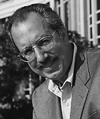

NOTLAR - ÖNSÖZ
1. Bu kitapta kullanılan biz sözcüğüyle ilgili bir not: Üsluba akıcılık katmak ve ortak bir sesle konuştuğumuzu vurgulamak amacıyla, bu sözü en liberal anlamda kullanıyoruz. Burada kullanılan şekliyle biz, yalnızca üçümüze değil, içimizden birinin ve yakın meslektaşlarımızın çalışmalarına da gönderme yapıyor.
1. BÖLÜM
1. BBC haber bölümü: Bu kitapta kullandığımız örneklerin çoğu gibi, bu olay da mülakat yaptığımız kişilerden (bu kez olaylara tanıklık eden) biri tarafından anlatılmıştı. Örnekler ikincil bir kaynaktan alınmışsa, dipnotlarda belirtilmektedir. İnsanların bizimle gizlilik kaydıyla konuştuğu durumlarda, olayın kimlik belirleyici ayrıntıları saklı tutulmuştur.
2. Rahatlatıcı etki: Lisa Berkman ve bşk., “Emotional Support and Survival after Myocardial Infarction,” Annals of Internal Medicine (1992).
2. Stres ve ölüm: Anika Rosengren ve bşk., “Stressful Life Events, Social Support and Mortality in Men Born in 1933”, British Medical Journal 207, no. 17 (1983): 1102-1106.
4. Limbik düzenleme: Thomas Lewis, Fari Amini ve Richard Lannon, A General Theory of Love (New York: Random House, 2000).
5. Duygusal aynalama: Robert Levenson, Berkeley’deki California Üniversitesi, kişisel iletişim.
6. Dışavurumculuk ruh hallerini iletir: Howard Friedman ve Ronald Riggio, “Effect of Individual Differences in Nonverbal Expressiveness on Transmission of Emotion”, Journal of Nonverbal Behavior 6 (1981): 32-58.
7. Grupların ruh halleri vardır: Janice R. Kelly ve Sigal Barsade, “Moods and Emotions in Small Groups and Work Teams”, çalışma raporu, Yale Yönetim Okulu, New Haven, Connecticut, 2001.
8. İş ekipleri ruh hallerini paylaşır: C. Bartel ve R. Saavedra, “The Collective Construction of Work Group Moods”, Administrative Science Quarterly 45 (2000): 187-231.
9. Ruh hallerini izleyen hemşireler ve muhasebeciler: Peter Totterdell ve bşk., “Evidence of Mood Linkage in Work Groups”, Journal of Personality and Social Psychology 74 (1998): 1504-1515.
10. Spor takımları: Peter Totterdell, “Catching Moods and Hitting Runs: Mood Linkage and Subjective Performance in Professional Sports Teams”, Journal of Applied Psychology 85, no. 6 (2000): 848-859.
11. Liderliğin zincirleme etkisi: Bkz. Wallace Bachman, “Nice Guys Finish First: A SYMLOG Analysis of U.S. Naval Commands”, The SYMLOG Practitioner: Application of Small Group Research, yay. haz. Richard Brian Polley, A. Paul Hare ve Philip J. Stone (New York: Praeger, 1988).
12. Liderin çalışma grupları üzerindeki duygusal etkisi: Anthony T. Pescosolido, “Emotional Intensity in Groups” (doktora tezi, Örgütsel Davranış Bölümü, Case Western Reserve Üniversitesi, 2000).
13. Anlam yöneticileri olarak liderler: Howard Gardner, Leading Minds: An Anatomy of Leadership (New York: Basic Books, 1995).
14. Gayri resmi liderler: V. U. Druskat ve A. T. Pascosolido, “Leading Self-Managing Work Teams from the Inside: Informal Leader Behavior and Team Outcomes.” Yayına teslim tarihi, 2001.
15. Ruh halleri, bulaşıcılık ve iş performansı: Sigal Barsade ve Donald E. Gibson, “Group Emotion: A View from the Top and Bottom”, Research on Managing Groups and Teams, yay. haz. D. Gruenfeld ve bşk. (Greenwich, CT: JAI Press, 1998).
16. En bulaşıcı gülümsemeler: Robert Levenson ve Anna Ruef “Emotional Knowledge and Rapport”, Empathic Accuracy, yay. haz. William Ickes (New York: Guilford Press, 1997).
17. Kahkaha istem dışıdır: Meredith Small, “More Than the Best Medicine”, Scientific American, Ağustos 2000, 24.
18. Kahkaha “beyinden beyne”dir: Robert Provine, Laughter: A Scientific Investigation (New York: Viking Press, 2000), 133.
19. Kahkaha vakaları: A.g.y.
20. Bir liderde görülen iyi ruh halleri istemli personel değişikliğinde düşüş anlamına gelir: Bkz. örneğin, Jennifer M. George ve Kenneth Bettenhausen, “Understanding Prosocial Behavior, Sales Performance, and Turnover: A Group-Level Analysis in Service Context”, Journal of Applied Psychology 75, no. 6 (1990): 698-706.
21. Temkinli ruh hali ve yüksek riskli kararlar: R. C. Sinclair, “Mood, Categorization Breadth, and Performance Appraisal,” Organizational Behavior and Human Decision Processes 42 (1998): 22-46.
22. Öfke ve liderlik: Jennifer M. George, “Emotions and Leadership: The Role of Emotional Intelligence”, Human Relations 53, no. 8 (2000): 1027-1055,
23. Ruh halleri kendi kendini sürdürür: Ruh hallerinin kendi kendini sürdürme etkisini ortaya koyan çok sayıda metin var. Bkz. örneğin, Gordon H. Bower, “Mood Congruity of Social Judgments”, Emotion and Social Judgments, yay. haz. Joseph Forgas (Oxford: Pergamon Press, 19919; 31-53.
24. Sıkıntı veren duygular dikkat kaçırır: Bkz. örneğin, Jacqueline Wood, Andrew Matthews ve Tim Dalgleish, “Anxiety and Cognitive Inhibition”, Emotion 1, no. 2 (2001): 166-181.
25. Yale’de yapılan ruh hali ve performans incelemesi: Sigal Barsade, “The Ripple Effect: Emotional Contagion in Groups”, çalışma raporu 98, Yale Yönetim Okulu, New Haven, Connecticut, 2000.
26. Patronlar ve kötü hisler: John Basch ve Cynthia D. Fisher, “Affective Events-Emotions Matrix: A Classification of Job-Related Events and Emotions Experienced in the Workplace”, Emotions in the Workplace: Research, Theory and Practice, yay. haz. N. Ashanasy, W. Zerbe ve C. Hartel (Westport, CT: Quorum Books, 2000), 36-48.
27. Sıkıntı empatiye ve sosyal beceriye zarar verir: Jeffrey B. Henriques ve Richard J. Davidson, “Brain Electrical Asymmetries during Cognitive Task Performance in Depressed and Nondepressed Subjects”, Biological Psychiatry 42 (1997): 1039-1050.
28. Duygular iş yaşamının kalitesini yansıtır: Cynthia D. Fisher ve Christopher S. Noble, “Affect and Performance: A Within Persons Analysis” (Academy of Management Yıllık Toplantısı’nda sunulan rapor, Toronto, 2000).
29. Görev tatmini, çalışırken kendini iyi hissetmekle aynı şey değildir: Cynthia D. Fisher, “Mood and Emotions while Working: Missing Pieces of Job Satisfaction?”, Journal of Organizational Behavior 21 (2000): 185-202. Bkz. ayrıca Howard Weiss, Jeffrey Nicholas ve Catherine Daus, “An Examination of the Joint Effects of Affective Experiences and Job Beliefs on Job Satisfaction and Variations in Affective Experiences over Time”, Organizational Behavior and Human Decision Processes 78. no. 1 (1999): 1-24.
30. İyi ruh hallerinin zihinsel yararları: Bkz. A. M. Isen, “Positive Affect”, Handbook of Cognition and Emotion, yay. haz. Tim Dalgleish ve Mick J. Power (Chichester, England: Wiley, 1999).
31. İyi ruh halleri ve performans: Bkz. C. D. Fisher ve C. S. Noble, “Emotion and the Illusory Correlation between Job Satisfaction and Job Performance (ikinci Örgütsel Yaşamda Duygular konferansında sunulan rapor, Toronto, Ağustos 2000).
32. Sigorta satışları: Martin Seligman ve Peter Schulman, “The People Make the Place”, Personnel Psychology 30 (1987): 437-453).
33. Mizahın çalışma üzerindeki etkisi: Bulgular R. W. Clouse ve K. L. Spurgeon’un “Corporate Analysis of Humor” başlıklı makalesinde gözden geçirilmiştir, Psychology: A Journal of Human Behavior 32 (1995): 1-24.
34. CEO’lar ve üst yönetim ekipleri: Sigal G. Barsade, Andrew J. Ward ve bşk., “To Your Heart’s Content: A Mode of Affective Diversity in Top Management Teams”, Administrative Science Quarterly 45 (2000): 802-836.
35. Hizmet ikliminin iyileşmesi gelir artışına yol açar: Lyle Spencer, Örgütlerde Duygusal Zekâ Araştırmaları Konsorsiyumu’nun toplantısında sunulan rapor (Cambridge, Massachussets, 19 Nisan 2001).
36. Liderin olumlu ruh halleri satış performansının habercisidir: Bkz. ayrıca Jennifer M. George, “Leader’s Positive Mood and Group Performance: The Case of Customer Service”, Journal of Applied Psychology 25, no. 9 (1995): 778-794).
37. Ruh halleri kalp sağlığı birimini etkiler: Benjamin Schneider ve D. E. Bowen, Winning the Service Game (Boston: Harvard Business School Press, 1995).
38. Ruh hali, müşteri hizmetleri ve satışlar: George ve Bettenhausen, „Understanding Prosocial Behavior“.
39. Müşteri hizmetleri temsilcisinin moral bozukluğu ve gelirlerdeki azalma: Schneider ve Bowen, Winning the Service Game.
40. İklimi iş performansına bağlayan analiz: David McClelland, “Identifying Competencies with Behavioral-Event Interwiews”, Psychological Science 9 (1998): 331-339; Daniel Williams, “Leadership for the 21st Century: Life Insurance Leadership Study” (Boston: LOMA/Hay Group, 1995).
41. Daha teknik olarak, örgüt iklimindeki değişkenliğin yüzde 53 ilâ 72’sinde tarzların bir rolü olduğu bulgulanmıştı. Bkz. Stephen P. Kelner Jr., Christine A. Rivers ve Kathleen H. O’Connell, “Managerial Style as a Behavioral Predictor of Organizational Climate” (Boston: McBer & Company, 1996).
42. Çok benzer bir sav şu makalelerde de ileri sürülmüştü: George ve Bettenhausen, “Understanding Prosocial Behavior”; Neal M. Ashkanasy ve Barry Tse, “Transformational Leadership as Management of Emotion: A Conceptual Review”, Neal M. Ashkanasy, Charmine E. J. Hartel ve Wilffred J. Zerbe, Emotions in the Workplace: Research, Theory and Practice (Wesport, CT: Quorum Books, 2000), 221-225.
2. BÖLÜM
1. Ortak duyguların grupta ya da örgütte bağlılığın anahtarı olduğunu ilk kez savunan kesinlikle biz değiliz. Bkz. örneğin, B. E. Ashforth ve R. H. Humphrey, “Emotion in the Workplace: A Reappraisal”, Human Relations 48 (1995): 97-125; ve Edward Lawler, “Affective Attachment to Nested Groups: A Choice-Process Theory”, American Sociological Review 57 (1992): 327-339.
2. Biz ahenk ve ahenksizliği, duygusal zekâlı liderliğin iki önemli kutbu olarak görüyoruz. Bunlar iki boyutlu olarak düşünülebilir: Duygusal hava ve empatili uyum. Birinci boyut duygusal havayı ve liderin eylemlerinin olumlu ya da olumsuz etkisini izler. Öteki boyutsa empatiyi; yani insanlarla liderin, birbirlerinin duygusal tonuna uyum sağlayıp sağlamadıklarını yansıtır.
3. İşyerinde bağırmak: Vivian Marino’nun, “It’s All the Rage at Work, Too” başlıklı makalesinde açıklanan anket sonuçları, The New York Times, 12 Kasım 2000, Money & Business bölümü, 3.
4. Tartışmaların fizyolojisi: Washington Üniversitesi’nden John Gottman’ın araştırması evli çiftler üzerinde yapılmıştı, ama tepki fizyolojisi, patron ve çalışan gibi, iki kişi arasında yakın ve duygusal bakımdan önemli bir ilişki olduğunda da geçerlidir. Ayrıntılar için, bkz. John Gottman, What Predicts Divorce: The Relationship between Marital Processes and Marital Outcomes (Hillsdale, NJ: Lawrence Earlbaum Associates, 1993).
5. Beceriksiz eleştiri: Robert Baron, “Countering the Effects of Destructive Criticism”, Journal of Applied Psychology 75, no. 3 (1990): 235-246.
6. Stres hormonları saatlerce dolaşımda kalır: Bkz. örneğin, Dolf Zillman, “Mental Control of Angry Aggression”, Handbook of Mental Control, yay. haz. Daniel Wegner ve James S. Pennebaker (Englewood Cliffs, NJ: Prentice Hall, 1993).
7. Bozguncular: J. K. Rowling, Harry Potter and the Prisoner of Azbakan (London: Bloomsbury, 1999), 187.
8. Hırsın karanlık yanı: Bkz. örneğin, Michael Maccoby, “Narcissistic Leaders: The Incredible Pros, the Inevitable Cons”, Harvard Business Review, Ocak-Şubat 2000, 69-75.
9. Bu bölümde betimlenen nörolojiyle ilgili ayrıntılar, burada belirtilenden çok daha karmaşıktır. Açıklık getirmek amacıyla, tabloyu basitleştirip herhangi bir karmaşık davranışta her zaman rol oynayan girift devreler ağındaki kilit yapılara odaklandık.
10. Amigdala sözcüğünü kullandığımızda, yapının kendisinden ve amigdalayı beynin diğer bölümleriyle birleştiren devreler ağından söz ediyoruz. Bkz. Joseph LeDoux, The Emotional Brain (New York: Simon & Schuster, 1996).
11. Pefrontal amigdalasında hasar olan hastalarda bilişsel yetiler aynen korunurken duygusal zekânın zarar görmesi: Amigdalanın bilateral bölgeleri, prefrontal lobun ventral-medial bölgesiyle sağ somatosensori ve insular korteksleri hasarlı olan nörolojik hastaların duygusal zekâ testlerinde gösterdikleri yetersizlik, neokorteksin diğer bölgeleri gibi beyin alanları hasar görmüş olan hastalarda görülmez. Antonio Damasio, Iowa Tıp Koleji, kişisel iletişim; Reuven Bar-On, Dr. Damasio’nun yardımcıları Antoine Bechara ve Daniel Tranel’la birlikte toparlanan ön veriler konusunda kişisel iletişim.
12. Liderin temel görevleri: Bkz. örneğin, Gary Yukl, Leadership in Organizations (Upper Saddle River, NJ: Prentice Hall, 1998).
13. Ayrıntılar için bkz. Fabio Sala, ECI Technical Manual (Boston: Hay Group, 2001).
3. BÖLÜM
1. Kahkaha ve liderlik: Fabio Sala, “Relationship between Executive’s Spontaneous Use of Humor and Effective Leadership” (doktora tezi, Boston Üniversitesi Sanat ve Bilim Yüksek Lisans Okulu, 2000).
2. Bağımsız olarak üstün bulunan yeterlikler: David C. McClelland, “Identifying Competencies with Behavioral-Event Interviews”, Psychological Science 9 (1998): 331-339. Mizah duygusuyla en sıkı bağlantıları olan duygusal yeterliklerden birkaçı, sosyal bakımdan en gözle görülür nitelikte oldukları için, beklenebileceği gibi, sosyal bilinç ya da ilişki becerisi alanına aitti. Aralarında empati, örgütsel bilinç, etkileme ve ekip liderliği de vardı. Ancak mizahın, özyönetim alanındaki yeterliklerle (inisiyatif, başarma dürtüsü) ve özbilinci yansıtan özgüvenle de güçlü ilişkileri vardı. Bu ise, o yetenekli liderlerde birçok duygusal zekâ yeterliğinin çoğu kez mizahın ustaca kullanımı aracılığıyla dışavurulduğunu ve bunun kendi başına, lider olarak elde ettikleri başarının temellerinden biri olduğunu gösterir.
3. Radikal bir önerme: David C. McClelland, “Testing for Competence Rather Than Intelligence”, American Psychologist 28 (1973): 14-31. McClelland bu makaleyi yazdığı sırada, Richard Boyatzis ve Daniel Goleman, Harvard Üniversitesi’nin psikoloji bölümünde onun lisans öğrencileriydi.
4. Lyle Spencer, “The Economic Value of Emotional Intelligence Competencies and EIC-Based HR Programs”, The Emotionally Intelligent Workplace, yay. haz. Cary Cherniss ve Daniel Goleman (San Francisco: Jossey-Bass, 2001).
5. Ortalama düzeydeki şube yöneticilerinin yıllık satışları 17 milyon dolarken, bu sıradışı liderlerin satışları yüzde 75 oranında daha yüksekti (ortalamada 29,8 milyon dolar), ayrıca satış getirileri de yüzde 106 oranında daha yüksekti.
6. James C. Collins ve Jerry I. Porras, Built to Last: Succesful Habits of Visionary Companies (New York: HarperBusiness, 1994).
7. Johnson & Johnson liderlik araştırmasının başında, Tüketim Şirketleri bölümünden Dottie Brienza ve Kathy Cavallo bulunuyordu. Bulgular, Örgütlerde Duygusal Zekâ Araştırmaları Konsorsiyumu’nun bir toplantısında sunulmuştu (Cambridge, Massachussets, 2 Kasım 2000).
8. ECI-360, duygusal zekâya dayalı liderlik yeterlikleri tayfının tamamını değerlendirir. Daha fazla bilgi edinmek için, bkz. http://www.eisglobal.com.
9. Farklılıklar istatiksel olarak on iki duygusal zekâ yeterliğinin tümü açısından anlamlıydı. ECI’nin yüksek potansiyellerle ilişkisi, şirketin kendi liderlik yeterliği modeline kıyasla daha yüksekti.
10. “Motivasyon”u “özyönetim”e dahil ederek, duygusal zekâ yeterlik modelini beş alandan dörde indirip yalınlaştırdık. İstatistik analizleri, duygusal zekâ yeterliklerinden birkaçını birleştirmemize de yol açtı –örneğin, “farklılıklardan yararlanma”, “empati”nin bir parçası oldu– böylece, listede eskiden yirmi beş yeterlik bulunurken, şimdi yalnızca on sekiz yeterlik var. Yeni düşünüş, duygusal zekâlı liderler açısından en önemli özellikleri vurgulamak amacıyla kimi yeterlikleri yeniden adlandırmamıza da yol açtı: “Güvenilirlik”, “saydamlık” oldu; “liderlik” ise “esinleyici liderlik”. Ayrıca, ayrıntılarla ilgilenme sorumluluğunu yetenekli bir yardımcıya devredebilen liderler açısından çok önemli olmayan “vicdanlılık”ı da listeden çıkardık. Bir etki aracı olan “iletişim”i ise “etkileme” yeterliğiyle birleştirdik.
11. Duygusal zekâ yeterlikleri ve beyin: Duygusal zekâ yeterliklerinin beyinle bağıntıları hakkında daha ayrıntılı bir açıklama için, bkz. Daniel Goleman, “Emotional Intelligence: A Theory of Performance”, Emotionally Intelligent Workplace içinde.
12. Temel kuram için, bkz. Goleman, İşbaşında Duygusal Zekâ (İstanbul: Varlık Yayınları, 2000). Bu kitapta o kuramı genişletiyoruz.
13. Duygusal zekâ yeterliklerinde kritik güç düzeyini bulgulayanlar: Richard Boyatzis, The Competent Manager: A Model for Organizational Effectiveness (New York: Wiley-Interscience, 1982) ve David C. McClelland, “Identifying Competencies with Behavioral-Event Interviews”, Psychological Science 9 (1998): 331-339.
14. Motivasyon ve sol prefrontal korteks: Richard Davidson, D.C. Jackson ve Ned H. Kalin, “Emotion, Plasticity, Contex and Regulation: Perspectives from Affective Neuroscience”, Psychological Bulletin 126, no. 6 (2000): 890-909.
15. Duygular ve karar alımı: Antonio Damasio, Descartes’ın Yanılgısı (İstanbul: Varlık Yayınları, 1999).
16. Girişimcilerin içgüdüleriyle karar almaları: Ann Graham Ettinger, Make Up Your Mind (Santa Monica, CA: Merritt Publishing, 1995).
17. Hava durumu tahmini: Barbara Knowlton, Jennifer Mangels ve Larry Squire, “A Neostriatal Habit Learning System in Humans”, Science 273 (1996): 1399-1402.
18. Bazal gangliumlar ve örtük öğrenme: Matthew D. Lieberman, “Intuition: A Social Cognitive Neuroscience Approach”, Psychological Bulletin 126 (2000): 109-137.
19. İşin içindeki devre: A.g.y.
20. İçten gelen his: Damasio, Descartes’ın Yanılgısı.
21. Prefrontal bölgelerin engelleme işlevi, etkin bir araştırma odağıdır ve prefrontal korteksten çıkan bağlantıların amigdaladaki nöronlar üzerinde engelleyici bir etkisi olduğuna işaret eden bazı deliller vardır. Dr. Richard Davidson, Wisconsin Üniversitesi, kişisel iletişim.
22. Diğer yayınlarda, bu yeterlik için güvenilirlik deyimini kullanmıştık. Burada, liderlik yeterliğinin bu yönünün önemini vurgulamak amacıyla saydamlık sözcüğünü kullanıyoruz.
23. “Cool”: Lewis MacAdams, Birth of Cool: Beat, Bebop and the American Avant-Garde (New York: Free Press, 2001).
24. Amigdala ile prefrontal bölgelerin empatideki rolü: Bkz. örneğin, Paul J. Eslinger, “Neurological and Neuropsychological Bases of Empathy”, European Neurology 39 (1988): 193-199.
25. Limbik ahenk: Thomas Lewis, Fari Amini ve Richard Lannon, A General Theory of Love (New York: Random House, 2000).
26. Vizyonun liderlik açısından önemi: Bkz. örneğin, Warren Bennis ve Burt Nanus, Leaders: Strategies for Taking Charge (New York: Harper and Row, 1985); Jay Conger, The Charismatic Leader (San Francisco: Jossey Bass, 1989); ve John P. Kotter, Leading Change (Boston: Harvard Business School Press, 1996).
27. Ürün direktörü: Alıntı kaynağı; Matthew Mangino ve Christine Dreyfus, “Developing Emotional Intelligence Competencies” (Örgütlerde Duygusal Zekâ Araştırmaları Korsorsiyumu’nda sunulan rapor, Cambridge, Massachussets, 19 Nisan 2001).
4. BÖLÜM
1. Veri tabanı, Boston’daki McBer & Company (şimdiki adıyla Hay Group) danışmanlık firması tarafından oluşturulmuş ve ilk olarak Stephen Kellner Jr. tarafından analiz edilmiştir. Bkz. Sthephen P. Kelner Jr., Christine A. Rivers ve Kathleen H. O’Connell, “Managerial Style as a Behavioral Predictor of Organizational Climate” (Boston: McBer & Company, 1996). Örnekleme uluslararasıydı; Avrupalı, Afrikalı, Kuzey Amerikalı, Avustralyalı ve Pasifik Kıyısı ülkelerinden liderleri içeriyordu; yarısı Amerikalıydı. Örgütsel iklimin ölçümü, George Litwin’in özgün çalışmasına dayalı olarak, McBer & Company tarafından geliştirilmişti. Bkz. G. H. Litwin ve R. A. Stringer Jr., “Motivation and Organizational Climate” (Boston: Araştırma Bölümü, İş Yönetimi Yüksek Lisans Okulu, Harvard Üniversitesi, 1971). Model, Litwin ve Stringer’in öncü çalışmasına dayalı olarak, David McClelland ve McBer’deki meslektaşları tarafından arıtılmış şekliyle, iklimin altı özgül göstergesini saptamaktadır.
2. Six Flags’den Bob Pittman: Alıntı kaynağı; M. Hayashi, “When to Trust Your Gut,” Harvard Business Review, Şubat 2001, 59-65.
3. Dönüşümcü liderler: James McGregor Burns, Leadership (New York: Harper & Row, 1978). Çıkar ortaklarının gereksinimlerine duyarlılık gösterilerek meşrulaştırılmış stratejik bir vizyonu dile getiren “karizmatik” liderler için de; bkz. Jay A. Conger, The Charismatic Leader: Behind the Mystique of Exceptional Leadership (San Francisco: Jossey-Bass, 1989).
4. Shelley Lazarus ve David Ogilvy: “A Job and a Life Intertwined,” The New York Times, 23 Mayıs 2001, C3.
5. Kapasiteyi zorlayan görevlerde başarının tadı: Cynthia Fisher ve Christopher S. Noble, “Affect and Performance: A Within Persons Analysis” (Academy of Management Yıllık Toplantı’sında sunulan rapor, Toronto, 2000).
6. James C. Collins ve Jerry I. Porras, Built to Last: Succesful Habits of Visionary Companies (New York: HarperBusiness, 1994).
7. Kaygılı ilişkisellik: Stephen P. Kelner, “Interpersonal Motivation: Cynical, Positive and Anxious” (doktora tezi, Boston Universitesi, 1991).
8. Lou Gernster’ın 1993 yılında IBM’deki gidişat değişikliği konusundaki sözleri: Alıntı kaynağı; Steve Lohr, “IBM Chief Gerstner Recalls Difficult Days at Big Blue”, The New York Times, 31 Temmuz 2003, C3.
5. BÖLÜM
1. Business Week, “The Best Performers,” 29 Mart 1998, 98.
2. Al Dunlap’ın Sunbeam’in CEO’su olarak tutumu hakkındaki SEC raporu ve analizleri: Floyd Norris, “S.E.C. Accuses Former Sunbeam Official of Fraud”, New York Times, 16 Mayıs 2001, 1.
3. Liderlikte narsisizm, ya da “ego” sorunu: Bu tür liderliğin olumlu ve olumsuz yönlerine ilişkin bir görüş için, bkz. örneğin, Michael Maccoby, “Narcissistic Leaders: The Incredible Pros, the Inevitable Cons”, Harvard Business Review, Ocak-Şubat 2000.
4. Bkz. Jim Collins, “Level 5 Leadership”, Harvard Business Review, Ocak 2001, 66-76.
5. Sigorta şirketiyle ilgili inceleme: John Larrere’in LOMA adına Martin Leshner, David Baker ve Stephen Kelner’le birlikte yönettiği Hay Group araştırma ekibi. Bkz. Daniel Williams, “Leadership for the 21st Century: Life Insurance Leadership Study” (Boston: LOMA/Hay Group, 1995).
6. Marcus Buckingham ve kötü patronları terk eden çalışanlarla ilgili verilerin alıntı kaynağı: Amy Zipkin, “The Wisdom of Thoughtfulness”, The New York Times, 31 Mayıs 2000, Cl.
7. David McClelland, “Identifying Competencies with Behavioral-Event Interviews” (Hay Group’un İngiltere Eğitim ve Çalışma Bakanlığı’na sunduğu rapor, 2000).
6. BÖLÜM
1. CEO hastalığı: Bu başlıkla ilk kez John Byrne tarafından tanımlanmıştır, “CEO Disease”, Business Week, 1 Nisan 1991, 52-59.
2. Yöneticilere yönelik geribildirim tutarlılığının azalması: James Conway ve Alen Huffcutt, “Psychometric Properties of Multi-source Performance Ratings: A Meta-analysis of Subordinate, Supervisor, Peer and Self-Ratings”, Human Performance 10, no. 4 (1997): 331-360.
3. Kadınlar ve azınlıklar diğerlerinden daha az geribildirim alır: Birkaç incelemeye ve yönetim bilimcilerinin raporuna göre, kadınlar ve gözle görülür azınlık gruplarının üyeleri, başkalarından daha az ve daha yararsız geribildirim almaktadır. Bkz. örneğin, Peggy Stuart, “What Does the Glass Ceiling Cost You?” Personnel Journal 71, no. 11 (1992): 70-80; Ann M. Morrison, Randall P. White, Ellen Van Velsor ve Yaratıcı Liderlik Merkezi, Breaking the Glass Ceiling: Can Women Reach the Top of America’s Largest Corporations? (Reading, MA: Addison-Wesley, 1987); ve Taylor Cox Jr., Cultural Diversity in Orgazinations: Theory, Research, and Practice (San Francisco: Berrett-Koehler Publishers, 1993).
4. Yeteneğini en çok abartanlar en kötü yöneticilerdir: Michele Burckle’ın Fabio Sala’da yaptığı analiz, ECI Technical Manual (Boston: Hay Group, 2001).
5. En iyi sağlık şirketlerinin CEO’ları: Eric Harter, “The Quest for Sustainable Leadership: The Importance of Connecting Leadership to Concepts of Organizational Sustainability” (EDM tezi, Case Western Reserve Üniversitesi, 1999).
6. En düşük performanslılara karşı en yüksek performanslı liderler: Michele Burcle’ın Fabio Sala’da yaptığı analiz, ECI Technical Manual (Boston: Hay Group, 2001).
7. Balayı etkisi: John P. Campbell, Marvin D. Dunnette, Edward E. Lawler III ve Karl E. Weick, Managerial Behavior, Performance, and Effectiveness (New York: McGraw Hill, 1970) çeşitli incelemeleri gözden geçirmiş ve bu sonuca varmışlardır. Daha yakın tarihli meta-analitik incelemeler ve yararlılık analizleri, önemli değişimlerin gerçekleşebileceğini ve gerçekleştiğini, ama bunun yapılan yatırım düzeyinden beklenecek çapta olmadığı gibi, pek çok eğitim türünde görülmediğini de doğrulamaktadır. Bkz. Charles C. Morrow, M. Quintin Jarrett ve Melvin Rupinski, “An Investigation of the Effect and Economic Utility of Corporate Wide Training”, Personnel Psychology 50 (1997): 91-119; Timothy Baldwin ve J. Kevin Ford, “Transfer of Training: A Review and Directions for Future Research”, Personnel Psychology 41 (1988): 63-105; Michael J. Burke ve Russell R. Day, “A Cumulative Study of the Effectiveness of Managerial Training”, Journal of Applied Psychology 71, no. 2 (1986): 232-245. Ayrıca bir değişiklik fark edildiğinde, incelenen sürelerin görece kısalığı nedeniyle değişimin sürdürülebilirliği meselesi gündeme gelir.
8. Eğitimin davranışlar üzerindeki etkisini gösteren incelemelerin sayısı azdır: Bazı incelemeler, gelişim çabalarının nihai amacı olan iş ya da yaşam sonuçları konusundaki eğitimin olumlu bir etkisi olabileceğini göstermiştir. Ancak sonuçlar üzerindeki etkinin gösterilmesi istenilen bir şey olmakla birlikte, değişimin nasıl meydana geldiği konusunu bulandırabilir. Kişinin eylemleri ve alışkanlıkları mı değişmektedir, yoksa işin içinde değişime açıklama getirecek başka etmenler mi vardır? Örgütlerde Duygusal Zekâ Araştırmaları Konsorsiyumu’nun tüm dünyada çıkan metinler üzerinde yaptığı incelemenin bulgularına göre, duygusal zekâyı artıran programların sayısı yalnızca on beştir. Bunların çoğu, (yeni kurulan işlerin sayısı gibi) iş sonuçları ya da (bir iş bulmak ya da işinde tatmin olmak gibi) yaşam sonuçları üzerinde etkili olmuştur. Bu sonuçlar, Cary Cherniss ve Mitchell Adler’in Promoting Emotional Intelligence in Organizations: Make Training in Emotional Intelligence Effective adlı kitabında yeniden incelenmiştir (Washington, DC: American Society for Training and Development, 2000).
9. Eğitimin etkisinin incelenmesi: Kaliteli bir araştırma tasarımı, arzu edilen davranışı eğitim öncesi ve sonrasında sınamanın yanı sıra, onu başka programlarla, örneğin karşılaştırma grupları ya da bir zaman-dizisi tasarımıyla kıyaslamanın bir yolunu da içerir. Eğitimi değerlendiren görece az sayıda girişimde bu unsurların bulunmaması, pek çok sonucun olabileceği kadar yararlı olmadığı anlamına gelir.
10. İletişim eğitiminin etkisi: Preston E. Smith, “Management Modeling Training to Improve Morale and Customer Satisfaction”, Personnel Psychology 29 (1976): 351-359. Tipik müşteri sorunlarına verilen yazılı yanıtlar, eğitilmiş grup ve karşılaştırma grupları için, iletişim becerilerinin ölçütleri olarak eğitim öncesinde ve sonrasında kodlanmıştır. Bu incelemedeki ilerleme oranı, eğitim öncesiyle karşılaştırılan eğitim sonrasındaki davranışı yansıtmaktadır.
11. Eğitimin aylar sonra etkisi: Klasik sayılan bir incelemede, eğitimden üç ay sonra eğitimden sorumlu direktörler bu becerilerin geniş bir yelpazesinde yalnızca yüzde 8 oranında ilerleme göstermişti. Raymond A. Noe ve Neal Schmitt, “The Influence of Trainee Attitudes on Training Effectiveness: Test of a Model”, Personnel Psychology 39 (1986): 497-523. Davranış değişikliği 360 derecelik bir ölçümle değerlendirilmişti. Katılımcının çalışmasını yakından takip eden kişi, iki öğretmen (örneğin, astlar ya da akranlar) ve iki destek elemanı, eğitileni eğitim öncesinde ve sonrasında, başkalarına karşı duyarlılık, liderlik ve kararlılık gibi gibi davranışları saptayan altı ölçek üzerinden değerlendirmişti. Bu incelemedeki ilerleme yüzdesi, eğitim öncesiyle karşılaştırılan eğitim sonrası davranışı yansıtmaktadır.
Bir başka incelemede, bir çelik şirketindeki yöneticilerin sosyal bilinci ve sosyal becerileri, eğitimden üç ay sonra yüzde 9 oranında artmış, on sekiz ay sonra ise biraz azalarak yüzde 7’ye inmişti. Herbert H. Hand, Max D. Richards ve John W. Slocum Jr., “Organizational Climate and the Effectiveness of a Human Relations Training Program”, Academy of Management Journal 16, no. 2 (1973). Davranışlar, katılımcıların işyerindeki astları tarafından, başkalarına karşı ilgi ve duyarlılık, özbilinç ve inisiyatif gibi alanlarla ilgili bir soruşturmadan yararlanılarak değerlendirilmişti. Bu veriler, eğitimden geçenler ve karşılaştırma grupları için toplanmıştı. Bu incelemedeki ilerleme yüzdesi, eğitim öncesiyle karşılaştırılan eğitim sonrası davranışları yansıtmaktadır.
Eğitilen insanların davranışlarının eğitilmemiş (ya da aynı eğitimi almamış) olanlarınkiyle karşılaştırıldığı, ama eğitim öncesi sınamanın yapılmadığı birçok incelemede de, benzer sonuçlar görülmüştü: Büyük bir tıp merkezindeki birinci düzey denetçilerin eğitilmesinden iki ay sonra, sosyal becerilerde yüzde 11 oranında göreli bir artış olmuştu. K. N. Wexley ve W. F. Memeroff, “Effectiveness of Positive Reinforcement and Goal Setting as Methods of Management Development”, Journal of Applied Psychology 60, no. 4 (1975): 446-450. Katılımcıların eğitim ve karşılaştırma gruplarındaki astları, başkalarına karşı saygı ve duyarlılık, çatışma çözümü, çalışma grubu içinde işbirliği ruhu, beklentileri ortaya çıkarma ve iletme gibi davranışları değerlendiren, amirleriyle ilgili bir soruşturmayı doldurmuşlardı. Bu incelemedeki ilerleme yüzdesi, eğitim gruplarındaki kişilerin karşılaştırma gruplarındakilerle kıyaslanan eğitim sonrası davranışlarını yansıtmaktadır. “Yalnızca sınama sonrası” kıyas geçerli bir yaklaştırmadır, çünkü eğitim ve kontrol gruplarına katılımcılar gelişigüzel seçilmiştir.
Bir başka incelemede, birinci düzey denetçiler eğitimden bir yıl sonra duygusal zekâyla ilintili çeşitli davranışlarda yüzde 18’lik bir ilerleme göstermişti. Gary P. Latham ve Lise M. Saari, “Application of Social-Learning Theory to Training Supervisors through Behavioral Modeling”, Journal of Applied Psychology 64, no. 3 (1979): 239-246. Eğitim ve karşılaştırma gruplarındaki kişilerin denetçileri, eğitimden üç ay ve bir yıl sonra, duygusal kontrol, denetleme ve başkalarıyla etkileşim gibi etmenler konusunda katılımcıları değerlendirmişti. Bu incelemedeki ilerleme yüzdesi, eğitim gruplarındaki kişilerin karşılaştırma gruplarındakilerle kıyaslanan davranışlarını yansıtmaktadır. “Yalnızca sınama sonrası” kıyas geçerli bir yaklaştırmadır, çünkü katılımcılar gruplara gelişigüzel seçilmiştir.
Yine bir başka inceleme, değişim planının oluşturulmasından sonra ortalama yüzde 8’lik bir ilerlemeyi göstermiştir. Dianne P. Young ve Nancy M. Dixon, Helping Leaders Take Effective Action: A Program Evaluation (Greensboro, NC: Center for Creative Leadership, 1996). Lider Laboratuvarı programına katılan yöneticiler, çalışma arkadaşları tarafından programdan beş buçuk ay sonra ve geriye dönük olarak bir yıl öncesinden değerlendirilmişti. İncelenen davranışlar esnekliği, özgüveni, kişilerarası ilişki becerilerini ve duygusal dengesizlikle baş etmeyi içeriyordu. Bu incelemedeki ilerleme yüzdesi, çalışma arkadaşlarının değerlendirme zamanındaki saptamalarından, değerlendirdikleri kişinin bir yıl öncesi hakkındaki görüşlerinin çıkarılarak, bir yıl öncesi için verilen puanlara bölünmesini yansıtmaktadır.
12. Eğitimin genel etkisi: Yüzde 10 oranı, gözden geçirilmiş beş incelemedeki çoklu ya da bileşik duygusal zekâ davranışlarında ortalama ilerleme yüzdesini temsil etmektedir. Yalnızca belirli bir yeterliğe baktığı için, iletişim becerileriyle ilgili incelemeyi içermez. O incelemeyi de dahil etseniz bile, genel ortalama yalnızca yüzde 15’tir. İnceleme eksikliği, ölçümlerin kıyaslanabilirliğini belirlemenin zor oluşu ve araştırma tasarımlarındaki tutarsızlık, kesin bir hesaplama yapmayı olanaksız hale getirmektedir.
Hiç kuşkusuz, keşfedilmemiş ve gözden geçirilmemiş ya da dergi ve kitaplar aracılığıyla erişilemeyen, dolayısıyla da gözardı edilmiş başka incelemeler de vardır. Bunun geniş kapsamlı bir gözden geçirme olduğunu iddia etmiyoruz, ama gerçek etkinin kaba bir yaklaştırması olarak, ilerleme yüzdesini ortaya koyduğunu söylüyoruz. Bu yaklaştırma, yönetim kursu, yönetim eğitimi ve özgüdümlü öğrenmenin görece etkisinin karşılaştırılmasına yardımcı olmak için sunulmuştur. Ne yazık ki daha yakın tarihli meta-analizlerin ve konuyu gözden geçiren makalelerin birçoğu, etki boyutlarını ve diğer ilintili verileri bildirirken istatistik tekniklerini kullanmaktadır. Bu, araştırmacının bulgulardaki istatiksel anlamı belirlemesine yardımcı olmakla birlikte, ilerleme yüzdesinin karşılaştırılmasına olanak tanımamaktadır. Ayrıca, on iki ilâ on sekiz aydan daha uzun süreli takip dönemi içeren araştırmaların yapılmaması, eğitimden sonra gözlemlenen değişimlerin sürdürülebilirliği konusunda yorum yapmayı zorlaştırmaktadır.
13. Bilginin etki süresi: L. Specht ve P. Sandlin, “The Differential Effects of Experiential Learning Activities and Traditional Lecture Classes in Accounting”, Simulations and Gaming 22, no. 2 (1991): 196-210.
14. İnsanlar duygusal zekâ yeterliklerini yaşam boyu geliştirirler: Matthew Mangino ve Christine Dreyfus, “Developing Emotional Intelligence Capacities” (Örgütlerde Duygusal Zekâ Araştırmaları Konsorsiyumu’na sunum, Massachussets, 19 Nisan 2001). Duygusal zekâ yeterliklerinin doğal edinim modeli, Christine Dreyfus’un NASA’daki yöneticiler hakkında daha önce yaptığı bir incelemeyle örtüşmektedir, “Scientist and Engineers as Effective Managers: A Study of Development of Interpersonal Abilities (doktora tezi, Case Western Reserve Üniversitesi, 1991).
15. Duygusal zekâ yeterlikleri yaşlandıkça artar: Kendi kendini değerlendirmenin yanı sıra yeterliklerin başkaları tarafından da değerlendirilmesi, duygusal zekâ yeterliklerinin tüm kümelerinde yaşla bağıntılıydı. Bu, yönetim düzeyinin bir işlevi değildi; görev düzeyiyle bağıntı, yalnızca ilişki yönetimi becerilerinde görülmüştü. Sala, ECI Technical Manual.
16. Eğitim sonuçlarının silinip gitmesi: Bu, kişinin bedeninde istemli ya da istemsiz olarak kimyasal ya da hormonal değişikliklerle başlayan değişimleri içermez. Ancak bu tür durumlarda bile, izleyen değişimlerin ve davranışsal hal ve gidişin yorumlanması, kişinin iradesi, değerleri ve motivasyonlarından etkilenecektir.
17. Uzun süreli pratiğin önemi: Thomas Lewis, Fari Amini ve Richard Lannon, A General Theory of Love (New York: Random House, 2000).
18. Dikatlilik eğitiminin etkisi: Bu araştırma, henüz yayımlanmamış olmakla birlikte, Tara Bennett-Goleman’ın Emotional Alchemy: How the Mind Can Heal The Heart adlı kitabında anılmaktadır (New York: Harmony Books, 2001).
19. Londralı taksi sürücülerinin beyin elastikiyeti: Eleanor A. Maguire, David G. Gadian, Ingrid S. Johnsrude, Catriona D. Good, John Ashburner, Richard S. J. Frackowiak ve Christopher D. Firth, “Navigation-Related Structural Change in the Hippocampi of Taxi Drivers”. Proceedings of the National Academy of Sciences 97, no. 8 (2000): 4398-4403. İnternette http://www.pnas.org/cgi/content/full/97/8/4398 adresinden edinilebilir.
20. Sinir bağlantıları tekrar tekrar kullanıldığında güçlenir: Gerald M. Edelman, Neural Darwinism: The Theory of Neuronal Group Selection (New York: Basic Books, 1987), 58.
21. Sinir bağlantılarının güçlendirilmesi: Case Western Reserve Üniversitesi’nden araştırmacılar, özellikle Profesör James E. Zull, sinirlerle kaslar arasında bağlantı kuran sinir ağları şiddetle uyarıldığında yeni dallarla bağlantıların oluştuğunu belirtmişlerdir. James E. Zull, The Art of Changing a Brain: Helping People Learn by Understanding How the Brain Works (Sterling, VA: Stylus Publishers, 2002). Princeton Üniversitesi’nden Profesör Elizabeth Gould, nörogenesis olayını inceleyerek, yeni şeyler öğrenmenin primatlarda yeni sinirlerin yaşamını sürdürmesine neden olurken, yeni şeyler öğrenmemenin yeni sinir hücrelerinin kaybıyla sonuçlandığını göstermişti (Sandra Blakeslee’nin “A Decade of Discovery Yields a Shock about the Brain” adlı makalesinde özetlenmiştir, The New York Times, 4 Ocak 2001, D1).
22. Becerileri değiştirmek için limbik bir bağlantı gereklidir: Lewis, Anini ve Lannon, General Theory of Love, 177.
23. Yeterlik geliştirme dersi: Bu ders, Richard Boyatzis’in “Stimulating Self-Directed Learning through the Managerial Assesment and Development Course” adlı makalesinde, Journal of Management Education 18. no.3 (1994): 304-323; ve Innovations in Professional Education: Steps on a Journey from Teaching to Learning’de tanımlanmıştır, yay. haz. Richard E. Boyatzis, Scott S. Cowen ve David A. Kolb (San Francisco: Jossey-Bass, 1995). Bu dersin ilk versiyonu 1979’da Amerikan Yönetim Derneği için, Lisansüstü Yönetim programının bir parçası olarak geliştirilmiştir. Dersin farklı türleri, Milwaukee’deki Alverno Koleji’nin öğretim üyeleri (açıklama için, bkz. Marcia Mentkowski ve ortakları, yay. haz., Learning That Lasts: Integrating Learning, Development, and Performance in College and Beyond [San Francisco: Jossey-Bass, 2000] ile David A. Whetton ve Kim. S. Cameron tarafından Michigan Üniversitesi’nde ilk kez kullanılmak üzere geliştirilmiştir (bkz. Developing Managerial Skills adlı ders kitaplarının dördüncü basımı (Reading, MA: Addison-Wesley, 1998). Dersin, Örgütlerde Duygusal Zekâ Araştırmaları Konsorsiyumu tarafından duygusal zekâ geliştirmede model program olarak seçildiği, Cary Cherniss ve Mitchell Adler’in, Promoting Emotional Intelligence in Organizations: Make Training in Emotional Intelligence Effective adlı kitaplarında belirtilmiştir (Washington, DC: American Society for Training and Development, 2000).
24. Sonuç değerlendirme çalışmaları: 1987’den itibaren, hatta ders henüz tüm zamanlı öğrenciler için zorunlu kılınmamışken, Richard Boyatzis dersi ve programın uzun erimli etkisini belgelemek için bir dizi izleme çalışmasını yönlendirmişti. Çalışmalar, ilerlemeleri kişinin kendisi hakkında söylediklerinden ve tipik iş sorunlarıyla uğraşan öğrencilerin “kritik olay” ses ve görüntü kayıtlarının davranış bakımından kodlanmasından yola çıkarak ölçüyordu. Veriler, öğrenciler derse girdiklerinde toplanmaya başladı, değerlendirmelerse mezun olduklarında ve bir işte çalışırken yapıldı. Çalışmaların ayrıntıları için, bkz. Richard E. Boyatzis, Ann Baker, David Leonard, Kenneth Rhee ve Lorraine Thompson, “Will It Make a Difference?: Assessing a Value-Based, Outcome Oriented, Competency-Based Professional Program”, Innovating in Professional Education: Steps on a Journey from Teaching to Learning, yay. haz. Richard E. Boyatzis, Scott S. Cowen ve David A. Kolb (San Francisco: Jossey-Bass, 1995); Richard E. Boyatzis, David Leonard, Kenneth Rhee ve Jane V. Wheeler, “Competencies Can Be Developed, but Not the Way We Thought”, Capability 2, no. 2 (1996): 25-41; Richard E. Boyatzis, Jane V. Wheeler ve R. Wright, “Competency Development in Graduate Education: A Longitudinal Perspective”, Proceedings of the First World Conference on Self-Directed Learning (Montreal: GIRAT, baskıda).
25. Diğer MBA programlarının etkisi üzerine çalışmalar: American Assembly of Collegiate Schools of Business (AACSB) için 1979’da ve 1980’lerde yapılan çalışmalarla ilgili bilgi için, bkz. Richard Boyatzis ve Mike Sokol, A Pilot Project to Assess the Feasibility of Assessing Skills and Personal Characteristics of Students in Collegiate Business Programs. Report to the AACSB (St. Louis: AACSB, 1982) ve Development Dimensions International (DDI), Final Report: Phase III. Report to the AACSB (St. Louis: AACSB, 1995). Weatherhead Yönetim Okulu’nun 1980’li yılların sonunda yaptığı temel çalışmalarda, karşılaştırmalar için testler kullanılmış ve bu çalışmalar Boyatzis, Cowen ve Kolb’un, Innovating in Professional Ediucation adlı kitabında gözden geçirilmiştir. Belirtilen ilerleme yüzdesi, öğrencilerin mezuniyet puanlarıyla giriş puanları arasındaki farkın giriş puanlarına bölünmesiyle hesaplanmıştı. İlk iki program değerlendirme merkezleriyle analiz edildiği için, bildirilen veriler simülasyonlarda gösterilen öğrenci davranışlarıyla igilidir. Diğer programlar, duygusal zekâlı davranışları değerlendirdiği kanıtlanan testleri içermekle birlikte, katılımcıların davranışlarının doğrudan ölçümleri değildi.
26. Duygusal zekâda ilerleme yüzdesinin karşılaştırılması: Gösterilen ilerlemenin yüzdesi ve diğer ilgili programlarla yapılan karşılaştırma; iş örneklerinin kodlanması, “kritik olay” mülakatları, videoya alınan değerlendirme merkezi egzersizleri, ya da kişinin davranışı hakkında başkalarının 360 derecelik değerlendirmesiyle gözlemlenen davranışlarla ilgiliydi (testlerle değil). Her bir dönem için gösterilen ilerleme yüzdesi, o kümedeki yeterliklerin sergilenme sıklığındaki artışın ortalamasıdır (yani, mezuniyet sırasında yeterliği sergileme sıklığından üniversiteye girişteki sıklığın çıkarılarak, giriş dönemindeki davranışın sergilenme sıklığına bölünmesi). Dil güçlüklerini denetlemek için, yalnızca ana dili İngilizce olanlar analize alınmıştı. Okuyucu, yüzdelerin farklı örneklere gönderme yaptığı konusunda uyarılır ve böylece zaman içinde beklenen sonuç ima edilmiş olur. Şekilde gösterilen örnekler şu kadrolardan alınmıştır: Bir ila iki yıllık sonuçlar (25. nottaki göndermelerde verilen) 1993, 1994 ve 1995’te tam zamanlı programdan mezun olan 163 MBA öğrencisini yansıtmaktadır. Üç ilâ beş yıllık sonuçlar, (25. notta verilen) 1995 ve 1996’da yarı zamanlı programdan mezun olan 44 MBA öğrencisiyle ilgilidir. Beş ilâ yedi yıllık sonuçlar, 1995 ve 1996’da yarı zamanlı programdan mezun olan 30 MBA öğrencisini yansıtmaktadır. Bu kişiler, mezuniyetten sonra on sekizle otuz ay arasındaki süreçte Jane V. Wheeler’ın “The Impact of Social Environments on Self-Directed Change and Learning” başlıklı tezinde incelenmiştir (doktora tezi, Case Western Reserve Üniversitesi, 1999).
Jane Wheeler, tezinde aynı insanların üç ilâ beş yıllık sonuçlarını beş ila yedi yıllık sonuçlarla karşılaştırdı. 1995 ve 1996 sınıflarından yarı zamanlı 30 MBA mezunundan oluşan küçük örnek grubu üç ilâ beş yıl arasında, özbilinç ve özyönetimde yüzde 53, sosyal bilinç ve ilişki yönetimindeyse yüzde 33 ilerleme göstermişti. Bu rakamlar grafikte gösterilen örneğin tamamına yönelik yüzdelerden biraz farklıdır, ama diğer yönetim öğretimi ya da MBA eğitim programlarıyla karşılaştırıldığında yine de görece yüksek bir düzeydedir.
Özbilinç ve yönetim yeterlikleri, başarıya yönelik olma, planlama, inisiyatif, vicdanlılık, özdenetim ve özgüveni içeriyordu. Sosyal bilinç ve ilişki yönetimi yeterlikleriyse empati, sosyal nesnellik, bağlar oluşturma, çatışma yönetimi, etkileme, ekip çalışmasında liderlik ve başkalarını geliştirmeyi içeriyordu.
27. Tam ve yarı zamanlı, yeterliğe dayalı programdan mezun olanların, değerlendirilen altı bilişsel yeterliğin yüzde 100’ünde önemli bir ilerleme gösterdikleri de belirtilmeye değer. Bu arada, yeterliğe dayalı olmayan daha önceki MBA programı, tam zamanlı programda bilişsel yeterliklerin yalnızca yüzde 86’sında, yarı zamanlı programda ise bilişsel yeterliklerin yüzde 57’sinde ilerleme göstermiştir. Tam zamanlı MBA öğrencilerinde ilerlemeler, değerlendirilen on dört duygusal zekâ yeterliğinde yüzde 100’dü; dersi almayan MBA öğrencilerinin bu yeterliklerde kaydettikleri ilerlemelerse yalnızca yüzde 50’ydi. Dersi alan yarı zamanlı öğrencilerde de etkileyici kazanımlar görülmüştü: bunlar on dört yeterliğin on üçünü edinirken, dersi almayanlar on iki yeterlikten yalnızca birini kazanmışlardı.
28. Profesyonellere yönelik programın etkisi: Ronald Ballou, David Bowers, Richard E. Boyatzis ve David A. Kolb, “Fellowship in Lifelong Learning: An Executive Development Program for Advanced Professionals”, Journal of Management Education 23, no. 4 (1999): 338-354.
29. Özgüdümlü öğrenme modelinin ortaya çıkışı: Richard Boyatzis bu yaklaşımın vaatlerini ilk kez, liderliği etkili kılan duygusal zekâ yetilerinin nasıl artırılacağına ilişkin ikna edici deliller sunan üç araştırma akımına bizzat katıldığında gördü. İşe yarayan gelişimle ilk kez, David Kolb ve MIT Sloan Yönetim Okulu’ndan meslektaşlarıyla birlikte yaptığı, özgüdümlü öğrenmenin performansı artırabileceğini gösteren çalışmada karşılaştı. 1970’lerin başlarında, o okulun öğrencileri geliştirecekleri bir iş becerisi seçiyordu ve birçoğu “ineklemeye dayalı” mühendislik ve bilim öğrenimi gördüğünden, kişilerarası beceriler yaygın bir tercihti. Bu öğrenciler, şu makalelerde betimlenmiştir: David A. Kolb, Sarah K. Winter ve David E. Berlew, “Self-Directed Change: Two Studies”, Journal of Applied Behavioral Science 6, no.3 (1968): 453-471; David A. Kolb, “A Cybernetic Model of Human Change and Growth”, yayımlanmamış metin 526-71, Sloan Yönetim Okulu, Massachussets Teknoloji Enstitüsü, Cambridge, 1971; David A. Kolb ve Richard E. Boyatzis, “On the Dynamics of the Helping Relationship,” Journal of Applied Behavioral Science 6, no.3 (1970): 267-289; David A. Kolb ve Richard Boyatzis, “Goal-Setting and Self-Directed Behavior Change,” Human Relations 23, no. 5 (1970): 439-457; Richard E. Boyatzis ve David A. Kolb, “Feedback and Self-Directed Behavior Change”, yayımlanmamış metin 394-69, Sloan Yönetim Okulu, Massachussets Teknoloji Enstitütüsü, Cambridge, 1969.
İkinci olarak da, 1960’larda ve 1970’lerde David McClelland’la meslektaşlarının Harvard Üniversitesi’nde yaptıkları ve üstün başarılı bir girişimci olmayı sağlayan becerilerin geliştirilebileceğini ilk kez gösteren öncü araştırmalara (Daniel Goleman’la birlikte) katıldığında karşılaşmıştır. McClelland’ın grubu, belki de derinlemesine incelenmiş ilk duygusal zekâ yeterliği olan başarma dürtüsünü artıracak eğitim programları geliştirdi. Sonuçları: Eğitimden geçenler, kayda değer bir başarıya ulaşan yeni küçük işletmelere önderlik etmiş, karşılaştırma gruplarına göre daha fazla yeni istihdam yaratmış, daha fazla yeni iş başlatmış ve daha fazla gelir üretmiştir. Bkz. David C. McClelland ve David G. Winter, Motivating Economic Achievement (New York: Free Press, 1969); David Miron ve David C. McClellanld, “The Impact of Achievement Motivation Training on Small Business”, California Management Review 21, no. 4 (1979): 13-28. Richard Boyatzis’in David C. McCleland’la birlikte, alkoliklerin itidalini koruyarak işlerini ve yurttaş olarak işlevlerini geri kazanmalarına yardım etmeyi amaçlayan bir terapi programı olarak güç motivasyonu eğitimi konusundaki çalışmaları, bu motivasyona dayalı değişim çabasına katkıda bulunmuştur. Bkz. Henry Cutter, Richard E. Boyatzis ve David Clancy, “The Effectiveness of Power Motivation Training for Rehabilitating Alcoholics”, Journal of Studies on Alcohol 38, no. 1 (1977) ve Richard E. Boyatzis, “Power Motivation Training: A New Treatment Modality”, Annals of the New York Academy of Sciences 273 (1976): 525-532.
Üçüncü bir içgörü kaynağı, Boyatzis’in Case Western Reserve Üniversitesi Weatherhead Yönetim Okulu’ndaki doktora öğrencileri ve çalışma arkadaşlarıyla yaptığı araştırmalardır.
Önde gelen diğer değişim modelleri, David McClelland’ın ve James Prochaska ile çalışma arkadaşlarının saik edinme kuramlarıdır. Bkz. David C. McClelland, “Toward a Theory of Motive Acquisition”, American Psychologist 20, no. 5 (1965): 321-333; James O. Prochaska, Carlo C. Diclemente ve John C. Norcross, “In Search of How People Change: Applications to Addictive Behaviors”, Amerian Psychologist 47, no. 9 (1992): 1102-1114. Duygusal zekâyı artırmayı amaçlayan belgelendirilmiş programların kapsamlı bir incelemesi, Rutgers Üniversitesi’nden Profesör Cary Cherniss’in başkanlığında, Örgütlerde Duygusal Zekâ Konsorsiyumu tarafından yapılmıştır. Bu model programların eleştirisi ve Konsorsiyum’un en iyi uygulamalar konusundaki görüşleri, web sitesinde ve yakın tarihli bir kitapta verilmiştir: Cary Cherniss ve Mitchell Adler, Promoting Emotional Intelligence in Orgazinations: Make Training in Emotional Intelligence Effective (Washington, DC: American Society for Training and Develelopment, 2000).
30. Özgüdümlü öğrenme modelinin tanımı: Richard E. Boyatzis, “Self-Directed Change and Learning as a Necessary Meta-competency for Success and Effectiveness in the 21st Century”, Keys to Employee Success in the Coming Decades, yay. haz. R. Sims ve J. G. Veres (Westport, CT: Greenwood Publishing, 1999). Bkz. ayrıca Richard E. Boyatzis, “Developing Emotional Intelligence”, The Emotionally Intelligent Workplace: How to Select for, Measure, and Improve Emotional Intelligence in Individuals, Groups, and Organizations, yay. haz. Cary Cherniss ve Daniel Goleman (San Francisco: Jossey Bass, 2001). Bu model, süreci, Weatherhead Yönetim Okulu’nun daha önce betimlenen MBA ve yönetici eğitim programlarında 1990’da uygulanan zorunlu ders için tasarlanan şekliyle tanımlamaktadır.
7. BÖLÜM
1. İdeal benliğe karşı gerekli sayılan benlik: Charles Handy, The Hungry Spirit: Beyond Capitalism, A Quest for Purpose in the Modern World (Londra: Hutchinson, 1997), 86.
2. İdeal benliğin yerine geçen, gerekli sayılan benliğin etkisi: İdeal üzerinde çalışmanın önemini gösteren incelemeler bile sık sık, sıradışı performans gösteren bir kişiliğin, belirli bir işteki insanlar için ideal imge olacağı varsayımında bulunma hatasını yapmaktadır. Bkz. örneğin, Mildred Burns, “The Effects of Feed-back and Commitment to Change on the Behavior of Elementary School Principals”, Journal of Applied Behavioral Science 13, no. 2 (1977): 139-166.
3. Değerler ve değere yönelik olmakla ilgili inceleme: Gordon W. Allport, P. E. Vernon ve Gardner Lindsey, Study of Values (Boston: Houghton Mifflin, 1960); Chris Argyris ve Don Schon, Theory in Practice Learning (San Francisco: Jossey-Bass, 1982); Clyde Kluckhohn, “Values and Value-Orientations in the Theory of Action”, Toward a General Theory of Action, yay. haz. Talcott Parson ve E. A. Shils (Cambridge, MA: Harvard University Press, 1951), 388-433; Florence Kluckhohn ve Fred Strodbeck, Variations in Value Orientations (Evanston, IL: Row, Peterson & Co, 1961); Milton Rokeach, The Nature of Human Values (New York: Free Press, 1973); Shalom H. Schwartz, “Universals in the Content and Structure of Values: Theoretical Advances and Empirical Tests in 20 Countries”, Advances in Experimental Social Psychology 25 (New York: Academic Press, 1992), 1-65; Michael Hechter, “Values Research in the Social and Behavioral Sciences”, The Origin of Values, yay. haz. Michael Hechter, Lynn Nadel ve Richard E. Michod (New York: Aldine de Gruyter, 1993), 1-28.
4. Çalışma felsefenizin saptanması: Felsefi Yönelim Soruşturması, üç çalışma felsefesinden –pragmatik, entelektüel ve hümanist– her birinin görece baskınlığını ölçer. Richard E. Boyatzis, Angela J. Murphy ve Jane V. Wheeler, “Philosophy as a Missing Link between Values and Behavior”, Psychological Reports 86 (2000):47-64.
5. Pragmatik çalışma felsefesi, (John Dewey, William James, Charles Sanders Peirce ve Ricard Rorty’in çalışmalarında düşünülen şekliyle) pragmatizmden, (C. D. Johnson ve P. Pettit’in çalışmalarında düşünülen şekliyle) sonuççuluktan, (John Dewey çalışmalarında düşünülen şekliyle) enstrümantalizmden ve (Jeremy Bentham ile John Stuart Mill’in çalışmalarında düşünüldüğü şekliyle) yararcılıktan doğmuştur. Tüm göndermeler için, bkz. Boyatzis, Murphy ve Wheeler, “Philosophy as a Missing Link”.
6. Larry Ellison betimlemesi: Mike Wilson, The Difference between God and Larry Ellison: Inside Oracle Corporation (New York: William Morrow, 1998); Stuart Read, The Oracle Edge: How Oracle Corporation’s Take No Prisoners Strategy Has Made an $8 Billion Software Powerhouse (Avon, MA: Adams Media Corporation, 1999).
7. Entelektüel çalışma felsefesi (René Descartes, Gottfried Wilhelm Leibnitz ve Benedict de Spinoza’nın çalışmalarında yansıdığı şekliyle) rasyonalizmden ve Georg Wilhelm Friedrich Hegel, Jurgen Habermas kadar, felsefi yapısalcılar (Claude Lévi-Strauss ve Jean Piaget) ile postmodernler (Friedich Nietzsche) gibi, rasyonalizmin etiyolojik kökleri olduğunu savunan çeşitli felsefecilerden doğmuştur. Tüm göndermeler için, bkz. Boyatzis, Murphy ve Wheeler, “Philosophy as a Missing Link”.
8. John Chambers betimlemesi: Andy Serwer, “There’s Something about Cisco”, Fortune, 15 Mayıs 2000, 114-138; John A. Byrne, “Visionary vs. Visionary”, Business Week, 28 Ağustos 2000, 21-214.
9. Hümanist çalışma felsefesi, komünitaryanizmden (W. F. Brundage), tefsircilerden (Hans-Georg Gadamer), hümanizmden (Francesco Petrarch ve R. W. Sellars) ve kolektivizmden (R. Burlingame ile W. H. Chamberlin) doğmuştur.
10. Narayana Murthy betimlemesi: Amit Dawra, Pinkey Jain, Ruchika Kohli ve Abhijit Rajan, “N. R. Narayana Murthy: Powered by Intellect, Driven by Value” yayımlanmamış rapor, Case Western Reserve Üniversitesi, Ekim 2000.
11. Peter Lynch’in kariyer değişikliği: J. Fierman, “Peter Lynch on the Meaning of Life”, Fortune, 23 Nisan 1990, 197-200.
12. Başarılı CEO’larda kariyer değişiklikleri: B. D. Fromson, “Second Acts for the Top Guys”, Fortune, 23 Nisan 1990, 251-262.
13. Düşlerimiz ve tutkumuz hayatımızdan hoşnut olmamızı sağlar: Ruth A. Schiller, “The Relationship of Developmental Tasks to Life Satisfaction, Moral Reasoning, and Occupational Attainment at Age 28”, Journal of Adult Development 5, no. 4 (1998): 239-254.
14. Lider umut simsarıdır: Napoleon in His Own Words, 5. cilt, haz. Jules Bertaut (Chicago: Ac.C. McClurg: 1916).
15. Yönetim programında Yöneticilik Doktorası: İnsani Değer Yaratma Amaçlı Liderlik adlı seminer, Case Western Reserve Üniversitesi Weatherhead Yönetim Okulu’nun Yönetim programındaki Yöneticilik Doktorası’nın bir parçasıdır. Bu, örgütsel, toplumsal ve küresel liderliği uygulayıcı/akademisyen bakış açısından sürdürmek isteyen, sınai, kâr amacı gütmeyen ve kamusal sektörlerin liderleri için tasarlanmış üç yıllık bir programdır. Öğrenciler birkaç günlüğüne, ayda bir kez, dünyanın çeşitli kentlerinden ve ülkelerinden uçakla gelir.
16. John Lauer’ın tarzı hakkındaki geribildirim: Kathy Crowley, Christina Fiduccia, Michelle Lee, Christopher Stevens ve Robert Stratton-Brown’dan kişisel iletişimler, Aralık 2000.
17. Doğal ama pahalı bir süreç olarak kendi kendini kandırma: Daniel Goleman, Hayati Yalanlar, Basit Gerçekler (İstanbul: Arion Yay. 1999).
18. Başarılı insanların iyimserliği: Martin P. Seligman, Learned Optimism: How to Change Your Mind and Your Life (New York: Alfred Knopf, 1991).
19. Değerlendirme açısından geribildirimin önemini gösteren inceleme: Richard E. Boyatzis ve David A. Kolb, Feedback and Self-Directed Behavior Change, yayımlanmamış metin 294-69, Sloan Yönetim Okulu, Massachussets Teknoloji Enstitüsü, Cambridge, 1969.
20. Etkili yöneticiler ve liderler geribildirim ister: Susan J. Ashford ve Anne S. Tsui, “Self-Regulation for Managerial Effectiveness: The Role of Active Feedback Seeking”, Academy of Management Journal 34, no. 2 (1991): 251-280).
21. Yalnızca olumlu geribildirim istemenin sonuçları: Paul A. Mabe III ve Stephen G. West, “Validity of Self-Evaluation of Ability: A Review and Meta-analysis”, Journal of Applied Psychology 67 (1982): 280-296.
22. Kendinizle ilgili gerçekliğin sınanması: Morgan W. McCall Jr., High Flyers: Developing the Next Generation of Leaders adlı kitabında (Boston: Harvard Business School Press, 1998), insanların gelişimlerine katkıda bulunabilecek “güçlü deneyimler”e sahip olabileceklerini, ama kimi zaman bu anları fark edemediklerini belirtiyor. Bunları, kişinin kendi kendine “Olmak istediğim kişi olacak mıyım? Olmak istediğim kişi gibi davrandım mı?” diye sorması gereken “hakikat anları” olarak nitelendiriyor. Bizim çerçevemizde bu hakikat anları, aynaya bakıp gerçek kimliğinizi kavrayabilmek gibi bir şeydir.
23. Gerçek benliği ideal benlik bağlamında değerlendirmek: Jay Conger, Learning to Lead: The Art of Transforming Managers into Leaders adlı kitabında (San Francisco: Jossey Bass, 1989), gelişim programlarında yöneticilerin bir sürü geribildirim aldıktan sonra verdikleri tepkiyi “hı-hıh” diye tanımlıyor. Geribildirimin hepsinden değilse de büyük bir bölümünden zaten haberdar olduklarını söylüyor. İdeal benlik bağlamı yoksa, bundan sonra nereye gidileceğine –o konuda ne yapılacağı ya da o konuda neden bir şey yapılması gerektiğine– ilişkin cazip bir konseptin de olmayacağını belirtiyor.
24. Neyin korunup neyin değiştirileceğini bilmek: Bu, pek çok akademisyenin örgütlere yönelik önerilerine koşuttur. Bkz. Ron Fry, “Change and Continuity in Organizational Growth”, Suresh Srivastva, Ronald E. Fry ve ortakları, Executive and Organizational Continuity: Managing the Paradoxes of Stability and Change (San Francisco: Jossey-Bass, 1993); James C. Collins ve Jerry I. Porras, Built to Last: Succesful Habits of Visionary Companies (New York: HarperBusiness, 1994).
25. Vizyona bağlılık uyum sağlama eksikliğine yol açabilir: Lisa Berlinger, “Managing Commitment to Increase Flexibility: An Exploration of Processes That Strenghten and Weaken Commitment” (doktora tezi, Texas Üniversitesi, 1991); Russell Ackoff, Creating the Corporate Future (New York: John Wiley & Sons, 1981).
26. Bir uyarı: 360 derecelik geribildirim ancak güvenli bir biçimde toplandığında yararlı olur. Bunun anlamı, sonuçların ilgili kişi ile eğitmeni dışında, (kendisi paylaşmayı seçmediği sürece) örgüt içinde kimseye açıklanmamasıdır. Ayrıca herkes, bilginin liderliği geliştirme amacıyla kullanılacağının farkında olmalıdır. 360 derecelik veriler bunun yerine performans yönetiminin ya da gözlemlerinin bir parçası olarak kullanıldığında, insanların zaafları konusunda açıksözlü olma olasılığı azalırken, güçlü yönlerini büyütme eğilimi de artar. Aynı şekilde, bilgiyi veren akranlar ve astlar, bireyi korumak ya da ona saldırmak amacıyla yalan söyleyebilirler.
27. Bir yönetici hakkında farklı geribildirim kaynaklarından farklı görüşler: Gene Harris ve Joyce Hogan, “Perceptions and Personalities of Effective Managers” (Savunma Bakanlığı’nın 13. Yıllık Psikoloji Sempozyumu’nda sunulan rapor, 16 Nisan 1992).
28. Etkililiğe karşı başarı: Fred Luthans, R. M. Hodgetts ve S. A. Rosenkrantz, Real Managers (Cambridge, MA: Ballinger Press, 1988).
29. Geribildirim kaynağı olarak akranların gücü: 360 derecelik geribildirim hakkındaki araştırmalar gözden geçirildiğinde, akranların patronlar ya da astlara kıyasla kestirim gücü daha yüksek –ve tabii ki liderin kendisi hakkındaki saptamalarından daha iyi– değerlendirmelerde bulunduğu bulgulanmıştır. A. V. Lewin ve A. Zwany, Peer Nominations: A Model, Literature, Critique, and a Paradigm for Research (Springfield, VA: National Technical Information Service, 1976); T. H. Shore, L. M. Shore ve George C. Thornton III, “Construct Validity of Self- and Peer Evaluations of Performance Dimensions in an Assesment Center”, Journal of Applied Psychology 77, no. 1 (1992): 42-54. Başka incelemelerde ise, liderliğin kestiriminde astların görüşlerinin akranların görüşlerinden daha güçlü olduğu bulgulanmıştır. Bkz. örneğin, Glenn M. McEvoy ve Richard W. Beatty, “Assessment Centers and Subordinate Appraisals of Managers: A Seven Year Examination of Predictive Validity”, Personnel Psychology 42 (1989): 37-52.
30. Astların yaptığı değerlendirmenin gücü: McEvoy ve Beatty, “Assessment Centers and Subordinate Appraisals of Managers”, 37-52.
31. Phil Stone, Your Corner of the Sky adlı (yakında çıkacak) kitabında bu yönleri, kişinin imza temaları olarak nitelendiriyor.
8. BÖLÜM
1. Farklı yaşam alanlarındaki hedefler üzerinde çalışmak: Jane V. Wheeler, “The Impact of Social Environment on Self-Directed Change and Learning” (doktora tezi, Case Western Reserve Üniversitesi, 1999).
2. Performansa yönelik hedefler iyi rehberler değildir: John F. Brett ve Don VandeWalle, “Goal Orientation and Goal Content as Predictors of Performance in a Training Program”, Journal of Applied Psychology 84, no. 6 (1999), 863-873.
3. Öğrenmeye yönelik hedeflerde kişisel standartlar: J. M. Beaubien ve S. C. Payne, “Individual Goal Orientation as a Predictor of Job and Academic Performance: A Meta-analysis Review and Integration” (Endüstri ve Örgüt Psikolojisi Derneği’nin toplantısında sunulan rapor, Atlanta, Georgia, Nisan 1999).
4. Performansa yönelik hedefler kaygı uyandırır: Gilad Chen, Stanley M. Gully, Jon-Andrew Whiteman ve Robert N. Kilcullen, “Examination of Relationships among Trait-like Individual Differences”, Journal of Applied Psychology 85, no. 6 (2000): 835-847. Hedef belirleme konulu araştırmaların ayrıntıları, Edwin A. Locke ve Gary P. Latham’ın, A Theory of Goal Setting and Task Performance adlı kitabında incelenmiştir (Englewood Cliffs, NJ: Prentice Hall, 1990).
5. Öğrenmeye yönelik hedefler daha iyi satışlara yol açar: Don VandeWalle, Steven P. Brown, William L. Cron ve John W. Slocum Jr., “The Influence of Goal Orientation and Self-Regulation Tactics on Sales Performance: A Longitudinal Field Test”, Journal of Applied Pschology 84, no. 2 (1999): 249-259.
6. Değişimi seyretmenin ötesine geçmek: James O. Prochaska, Carlo C. Diclemente ve John C. Norcross, “In Search of How People Change: Applications to Addictive Behaviors”, American Psychologist 47, no. 9 (1992): 1102-1114.
7. Hedefler kendi kendini gözlemenin anahtarıdır: Roy F. Baumeister, Todd E. Heatherton ve Dianne M. Tice, Loosing Control: How and Why People Fail at Self-Regulation (New York: Academic Press, 1994).
8. Alışkanlıkların farkına varmak: John A. Bargh ve Tanya L. Chartrand, “The Unbearable Automaticity of Being”, American Psychologist 54, no. 7 (1999): 4462-479.
9. Beynin hazırlanması: Cameron Carter, Angus Macdonald, Stefan Ursu, Andy Stenger, Myeong Ho Sohn ve John Anderson, “How the Brain Gets Ready to Perform” (Sinirbilim Derneği’nin 30. yıllık toplantısında yapılan sunum, New Orleans, Kasım 2000).
10. Hedeflerin belirlenmesi yeni bir şey değildir: David A. Kolb ve Richard E. Boyatzis, “Goal-Setting and Self-Directed Behavior Change”, Human Relations 23, no. 5 (1970): 439-457.
11. Hedef belirlemek ve girişimciler: Araştırmalarla ilgili bir inceleme için, bkz. David C. McClelland, Human Motivation (Chicago: Scott, Foresman, 1985). Önceki araştırmalar için, bkz. David C. Mcllelland, The Achieving Society (Princeton: Van Nostrand, 1961); David McClelland ve David G. Winter, Motivating Economic Achievement (New York: Free Press, 1969).
12. Hedef belirleme ve özgüdümlü davranış değişikliği: David A. Kolb, Sarah K. Winter ve David E. Berlew, “Self-Directed Change: Two Studies”, Journal of Applied Behavioral Science 6, no. 3 (1968): 453-471); David A. Kolb, “A Cybernetic Model of Human Change and Growth”, yayımlanmamış metin 526-71, Sloan Yönetim Okulu, Massachussets Teknoloji Enstitüsü, Cambridge, 1971; David A. Kolb ve Richard E. Boyatzis, “Goal-Setting and Self-Directed Behavior Change”. Saik edinmedeki adımların entegrasyonu ile Kolb ve Boyatzis modellerinden çıkan sonuç, yeterlik edinme diye nitelendirilen bir süreçti.
13. Etkili hedef belirleme konusundaki yakın tarihli araştırmalar: Wheeler, “Impact of Social Environment”; David Leonard, “The Impact of Learning Goals on Self-Directed Change in Education and Management Development” (doktora tezi, Case Western Reserve Üniversitesi, 1996); Kenneth Rhee, “Journey of Discovery: A Longitudinal Study of Learning during a Graduate Professional Program” (doktora tezi, Case Western Reserve Üniversitesi, 1997).
14. Eşik noktaları: David C. McClelland, “Identifying Competencies with Behavioral Event Interviews”, Psychological Science 9, no. 5 (1998): 331-339. Bu kuramın, bir uluslararası danışmanlık firmasında kıdemli ortaklarca kullanılan yeterliklerin mali etkisinin kapsamlı bir etüdünde çapraz değerlendirmeye tabi tutulduğu, Richard Boyatzis tarafından belirtilmiştir, “Building Brilliant Organizations: Competencies, Complexity, and Consequences” (4. Uluslararası Yeterlik Uygulamaları Konferansı’nda ana sunum, Londra, 23 Ekim 1999); Richard E. Boyatzis, Daniel Goleman ve Kenneth Rhee, “Clustering Competence in Emotional Intelligence: Insights from the Emotional Competence Inventory (ECI)”, Handbook of Emotional Intelligence, yay. haz. Reuven Bar-On ve James D. A. Parker (San Francisco: Jossey-Bass, 2000), 343-362; Malcolm Gladwell, The Tipping Point: Low Littile Things Can Make a Big Difference (Boston: Little, Brown, 2000).
15. Kişisel taahhüt hedefe ulaşmanın anahtarıdır: Howard J. Klein, Michael J. Wesson, John R. Hollenback ve Bradley J. Alge, “Goal Commitment and the Goal-Setting Process: Conceptual Clarification and Empirical Synthesis”, Journal of Applied Psychology 84, no. 6 (1999): 885-896; Locke ve Latham, Theory of Goal Setting.
16. İç motivasyon dış motivasyondan çok daha güçlüdür: R. M. Ryan ve E. L. Devi, “Self-Determination Theory and the Facilitation on Intrinsic Motivation, Social Development, and Well-Being,” American Psychologist 55, no. 1 (2000): 68-78; T. Kasser ve R. M. Ryan, “Be Careful What You Wish For: Optimal Functioning and the Relative Attainment of Intrinsic and Extrinsic Goals”, Life Goals and Well-Being, P. Schmuck ve K. M. Sheldon (Lengerich, Almanya: Pabst Science, baskıda).
17. Farklı planlama tarzları: Annie McKee, “Individual Differences in Planning for the Future” (doktora tezi, Case Western Reserve Üniversitesi, 1991).
18. Anlamlı bir gelecek tasarlamak: Michael McCaskey, “A Contingency Approach to Planning: Planning with and without Goals”, Academy of Management Journal 17 (1974): 281-291; McKee, “Individual Differences in Planning for the Future”.
19. Özgül, ölçülebilir hedefler: Edwin Locke, “Toward a Theory of Task Performance and Incentives”, Organizational Behavior and Human Performance 3 (1968): 157-189); J. Hollenbeck ve H. Klein, “Goal Commitment and the Goals Setting Process: Problems, Prospects, and Proposals for Future Research”, Journal of Applied Psychology 40 (1987): 212-220.
20. Özgül yeterliklerin hedeflenmesi işe yarar: Leonard, “Impact of Learning Goals”; Wheeler, “Impact of Social Environment”.
21. Kişinin tercih ettiği tarzları kullanması en elverişli yöntemdir: David A. Kolb, Experimental Learning: Experience as the Source of Learning and Development (englewood Cliffs, NJ: Prentice-Hall, 1984).
22. Tipik öğrenme tarzları: A.g.y.; ve David A. Kolb, Richard E. Boyatzis ve Charalampos Mainemelis, “Experiental Learning Theory: Previous Research and New Directions”, Perspectives on Thinking, Learning, and Cognitive Syles, yay. haz. Robert J. Sternberg ve Li-fang Zhang (Mahwah, NJ: Lawrence Erlbaum Associates, 2001), 227-248. Diğer göndermeler için bkz. http://www.learningfromexperience.com.
23. Öğrenme tarzlarının sınanması: Bkz. örneğin, The Kolb Learning Style Inventory ve Boyatzis and Kolb Adaptive Style Inventory; http://www.haygroup.com
24. İşlevsiz alışkanlıkların tetikleyicileri: Bilişsel davranış terapisi alanında bu erken uyarı, tetikleyicilerin eski, işlevsiz alışkanlıkları nüksettirmeden önce saptanmalarını sağlar. Bkz. Tara Bennett-Goleman, Emotional Alchemy: How the Mind Can Heal the Heart (New York: Harmony Books, 2001).
25. Prefrontal korteks ve limbik devreler: Matthew D. Lieberman, “Intuition: A Social Cognitive Neuroscience Approach”, Psychological Bulletin 126 (2000): 109-137; B. J. Knowlton, J. A. Mangels ve L. R. Squire, “A Neostriatal Habit Learning System in Humans”, Science 273 (1996): 1399-1402.
26. Öğrenmede tekrarlama ve pratik yapma gereği: Thomas Lewis, Fari Amini ve Richard Lannon, A General Theory of Love (New York: Random House, 2000); ve Lieberman, “Intuition”.
27. Sinir yollarının güçlenmesi ve nörogenesis: Richard J. Davidson, Daren C. Jackson ve Ned H. Kalin, “Emotion, Plasticity, Context, and Regulation: Perspectives from Affective Neuroscience”, Psychological Bulletin 126, no. 6 (2000): 890-909.
28. Üst düzey yöneticiler alıştırma yapmaya çok az zaman ayırır: Tony Schwartz’ın Jim Loehr’le birlikte kaleme aldığı, Harvard Business Review’da çıkan “The Making of the Corporate Athlete” adlı makalede yer alan bir cümleyi, Weatherhead Yönetim Okulu’nda başka sözcüklerle açıklaması, 17 Kasım 2000.
29. Yeni sinir yolları yaratmak için alıştırma yapmak: Bennet-Goleman, Emotional Alchemy.
30. Alıştırma için özdenetimden yararlanmak: Mark Muraven ve Roy Baumeister, “Self-Regulation and Depletion of Limited Resources: Does Self-Control Resemble a Muscle?” Psychological Bulletin 126, no. 2 (2000): 247-259.
31. Birçok ortamda alıştırma yapmak: Christine R. Dreyfus, “Scientist and Engineers as Effective Managers: A Study of Development of Interpersonal Abilities” (doktora tezi, Case Western Reserve Üniversitesi, 1991).
32. Eylem öğrenimi gizli öğrenmedir: Danışmanların ve örgüt-içi programların sunduğu düzinelerce liderlik geliştirme programını inceleyen Jay Conger ve Beth Benjamin, eylem öğrenimini Building Leaders: How Successful Companies Develop the Next Generation adlı kitaplarında (San Francisco: Jossey Bass, 1999) “liderliğin geliştirilmesi için yeni paradigma” olarak nitelendirmişlerdir.
33. Laura Wilkinson’un zihinsel provası: Jim Loehr ve Tony Schwartz, “The Making of the Corporate Athlete”, Harvard Business Review, Ocak 2001, 120-128.
34. Vizyon oluşturma aynı beyin hücrelerini harekete geçirir: Gabriel Kreiman, Christof Koch ve Itshak Fried, “Imagery Neurons in the Human Brain”, Nature 408 (2000): 357-361.
35. Öğrenme bağlamı olarak ilişkiler: Kathy E. Kram, “A Relational Approach to Career Development”, The Career is Dead–Long Live the Career, yay. haz. Douglas T. Hall (San Francisco: Jossey-Bass, 1996); Kathy E. Kram ve Douglas T. Hall, “Mentoring in a Context of Diversity and Turbulence”, Managing Diversity: Human Resource Strategies for Transforming the Workplace, yay. haz. Ellen E. Kossek ve Sharon A. Lobel (Cambridge, MA: Blackwell Business, 1996).
36. Özgüven alanındaki kazanımlar: Ronald Ballou, David Bowers, Richard E. Boyatzis ve David A. Kolb, “Fellowship in Lifelong Learning: An Executive Development Program for Advanced Professionals”, Journal of Management Education 23, no. 5 (1999): 338-354.
37. Olumlu gruplar olumlu değişime yardımcı olur: Jin Nam Choi, Richard H. Price ve Amiram D. Vinokur, “How Context Works in Groups: The Influence of Group Processes on Individual Coping Outcomes”, yayımlanmamış metin, Michigan Üniversitesi, Sosyal Araştırmalar Enstitüsü, 1999.
38. Liderlik streslidir: Robert S. Steele, “The Physiological Concomitants of Psychogenic Arousal in College Males” (doktora tezi, Harvard Üniversitesi, 1973); Robert S. Steele, “Power Motivation, Activation, and Inspirational Speeches”, Journal of Personality 45 (1977): 53-64; David C. McClelland, Richard J. Davidson ve C. Saron, “Evoked Potential Indicators of the Impact of the Need for Power on Perception and Learning”, yayımlanmamış metin, Harvard University, 1979; David C. McClelland, Richard J. Davidson, C. Saron ve E. Floor, “The Need for Power, Brain Norepinephrine Turnover and Learning”, Biological Psychology 20 (1980): 93-102.
39. Stres ve kortisol öğrenmeyi engeller: Yakın tarihli araştırmaların gösterdiğine göre, “sürekli yüksek kortisol düzeyleri, beyin merkezindeki kısa süreli belleği uzun süreli belleğe dönüştürmeye yarayan nöronların (hipokampus) dallanmasında azalmaya neden olmaktadır. Daha da kötüsü, uzun süreli çok yüksek kortisol düzeylerinin hipokampus hücrelerini yok ettiği anlaşılmaktadır.” James E. Zull, The Art of Changing a Brain: Helping People Learn by Understanding How the Brain Works (Sterling, VA: Stylus, 2002), 65. Uzun süreli stres ve depresyon, travma sonrası stres bozukluğunun kurbanı olan ve ciddi biçimde depresyona giren kadınların hipokampusunda küçülmeye yol açmaktadır. Stanford Üniversitesi’nden Robert Sapolosky ve St. Louis’deki Washington Üniversitesi’nden Yvette Sheline’ın çalışmalarını alıntılayanlar: Robert S. Boyd, “Scientists Find Brain Continues to Readapt Throughout Life”, Miami Herald, 17 Mayıs 2000; Davidson, Jackson ve Kalin, “Emotion, Plasticity, Context, and Regulation”.
40. Güvenli ama öğrenmek için yeterince rahat olmayan ortamlar: Kolb ve Boyatzis, “Goal-Setting and Self-Directed Behavior Change”.
41. Risk alan diğer kişiler bize yardımcı olur: Paul R. Nail, Geoff MacDonald ve David A. Levy, “Proposal of a Four-Dimensional Model of Social Response”, Psychological Bulletin 126, no. 3 (2000): 454-470.
42. Akıl hocaları kariyerimizin erken dönemlerinde yardımcı olur: Morgan W. McCall Jr., Michael M. Lombardo ve Ann M. Morrison, Lessons from Experience: How Successful Executives Develop on the Job (Lexington, MA: Lexington Books, 1988). Akıl hocalığıyla ilgili çalışmalar, Boston Üniversitesi’nden Kath Kram’ın bu tür yardımcı ilişki üzerine yirmi yıldır yaptığı araştırmalara dayalı olarak Yaratıcı Liderlik Merkezi’yle birlikte sürdürülmektedir.
43. İyi bir eğitmen bulmak: Bu liderlik becerileri için akıl almaya kararlıysanız, eğitmeninizin hem deneyimli, hem de bir liderin duygusal zekâsını artırmaya yönelik en iyi yol gösterici kurallara aşina olduğundan emin olun. Pek çoğu değildir. Neyin işe yarayıp neyip yaramadığına dair ampirik verilere dayalı olan yol gösterici kurallar, Örgütlerde Duygusal Zekâ Araştırmaları Konsorsiyumu tarafından geliştirilmiştir. Temel kurallar şu kitaplarda özetlenmiştir: Daniel Goleman, İşbaşında Duygusal Zekâ (İstanbul: Varlık Yayınları, 2000) ve Cary Cherniss ile Mitch Adler, Promoting Emotional Intelligence in Organizations (Washington, DC: American Society for Training and Development, 2000).
44. Bir başka CEO’nun akıl hocalığı: Jennifer Reingold, “Want to Grow as a Leader? Get a Mentor”, Fast Company, Ocak 2001, 58-60.
45. Etkili eğitmenler duygusal zekâlarını kullanırlar: Richard E. Boyatzis ve James A. Burruss, Validation of a Competency Model for Alcoholism Counselors in the Navy–Final Report on Contract Number N00123-77-C-0499 (Washington, DC: U.S. Navy, 1979); James A. Burruss ve Richard E. Boyatzis, Continued Validation of a Competency Model for Alcoholism Counselors in the Navy–Final Report on Contract Number N002 44-80-C-0521 (Washington, DC: U.S. Navy, 1981); Richard R. Carkhuff, Helping and Human Relations: A Primer for Lay and Professional Helpers, I. Cilt, Selection and Training ve II. cilt, Practice and Research (New York: Holt, Rinehart and Winston, 1969); Ted P. Asay ve Michael J. Lambert, “The Empirical Case for the Common Factors in Therapy: Quantitative Findings”, The Heart and Soul of Change: What Works in Therapy, yay. haz. Mark A. Hubble, Barry L. Duncan ve Scott D. Miller (Washington, DC: American Psychological Association, 1999).
9. BÖLÜM
1. Grup kararının üstünlüğü: Alan B. Krueger, “Economic Scene”, The New York Times, 7 Aralık 2002, C2.
2. Kötü kararlar alan parlak ekipler: R. Meredith Belbin, Team Roles at Work (Londra: Butterworth-Heineman, 1996).
3. Limbik düzenleme ve yaşamımızı etkileyebilecek kişilere gösterilen dikkat: Thomas Lewis, Fari Amini ve Richard Lannon, A General Theory of Love (New York: Random House, 2000).
4. Grubun duygusal gerçekliğinin yaratılmasında liderin rolü: Otorite dinamikleri konusunda en kapsamlı çalışmalardan bazıları, A.K. Rice Enstitüsü’nün üyelerince yapılmıştır. Temel araştırmalarla ilgili bir inceleme için, bkz. Arthur D. Colman ve W. Harold Bexton, yay. haz., Group Relations Reader 1 (Washington, DC: A.K. Rice Institute, 1975); Arthur D. Colman ve Marvin H. Geller, yay. haz., Group Relations Reader 2 (Jupiter, FL: A.K. Rice Institute, 1985). Liderin bir iş ortamındaki etkisi hakkında kısa ve daha yakın tarihli bir inceleme için bkz. Michel Deschapelle, “The National Conference Has Helped My Career”, Speaking of Authority, 7. cilt, no. 1 (Jupiter, FL: A.K. Rice Institute, 2000). Bir azınlık liderinin grupların duygusal gerçekliği üzerindeki etkisiyle ilgili bir tartışma için, bkz. Kathy E. Kram ve Marion McCollom Hampton, “When Women Lead: The Visibility-Vulnerability Spiral”, The Psychodynamics of Leadership, yay. haz. Edward B. Klein, Faith Gabelnick ve Peter Herr (Madison, CT: Psychosocial Press, 1998).
5. Sağlıklı ilişkileri ve gelecek üzerinde olumlu bir odaklanmayı destekleyecek iklimin yaratılmasında liderin rolü: Rosamund Stone Zander ve Benjamin Zander, The Art of Possibility: Transforming Professional and Personal Life (Boston: Harvard Business School Press, 2000).
6. Yüksek performanslı ekipler: Jon R. Katzenbach ve Douglas K. Smith, The Wisdom of Teams (Boston: Harvard Business School Press, 1993).
7. Grubun duygusal zekâsı: Vanessa Urch Druskat ve Steven B. Wolff, “Group Emotional Intelligence and Its Influence on Group Effectiveness”, The Emotionally Intelligent Workplace: How to Select For, Measure, and Improve Emotional Intelligence in Individuals, Groups, and Organizations, yay. haz. Carey Cherniss ve Daniel Goleman (San Francisco: Jossey-Bass, 2001). Bkz. ayrıca Vannessa Urch Druskat ve Steven B. Wolff, “Building the Emotional Intelligence of Groups”, Harvard Business Review, Mart 2001, 81-90.
8. Bir bütün olarak grup: Leroy Wells, “The Group-as-a Whole Perspective and Its Theoretical Roots”, Colman ve Geller, yay. haz., Group Relations Reader 2.
9. Bir grup üyesi önderlik ettiğinde: Susan Wheelan ve France Johnston, “The Role of Informal Member Leaders in a System Containing Formal Leaders”, Small Group Research 27, no. 1 (1996): 33-55. Bkz. ayrıca Susan A. Wheelan, Creating Effective Teams (Thousand Oaks, CA: Sage Publicatiions, 1999).
10. Dikkatlilik: Kişinin kendisine, başkalarına ve içinde yaşadığı ortama gösterdiği büyük dikkati betimlemek için kullanılan bu deyim, çoğunlukla iş dünyasıyla ilgili yayınlarda kullanılmaz. Yine de, duygusal/psikolojik sağlığın ve kişelerarası etkili ilişkilerin esası olarak görülür ve bizim özbilinç anlayışımızda temel niteliktedir. Ekip düzeyinde dikkatlilik, grubun ruh hallerine katılmak, dile getirilmemiş kaygı ya da umutları açıklamak, ya da grubun dikkatini işlevsiz modellere çekmek gibi davranışlarda sergilenen ortak normlar dizisidir. Konuyla ilgili ilginç perspektifler için, bkz. Robert Wuinn, Change the World: How Ordinary People Can Accomplish Extraordinary Results (San Francisco: Jossey-Bass, 2000); Tara Bennett-Goleman, Emotional Alchemy: How the Mind Can Heal the Heart (New York: Harmony Books, 2001); Dalai Lama, The Art of Happiness: A Handbook for Living (New York: Riverhead Books, 1998); Phil Nuerenberger, The Quest for Personal Power: Transforming Stress into Strength (New York: G.P. Putnam’s Sons, 1996).
11. Empati ve sistemler perspektifi: Duygusal zekâlı bireyler ve ekipler dikkatlerini bütün sisteme –kendileri, kişilerarası ilişkiler, ekipler, grup içi ilişkiler, örgüt, dış çevre, çıkar ortağı grupların etkileşimi, vb.– yöneltirler. Sistemler perspektifi, insanların ve ekiplerin, eylemlerinin çok farklı türde çıkar ortaklarını nasıl etkileyeceğine karar vermelerini sağlar; bu, sistemin farklı bölümleri kadar, işin içindeki insanlara da empati göstermektir. Söz konusu görüş, örgütsel davranışlarla ilgili metinlerde gayet iyi belgelenmiştir. Bkz. Peter Senge, Beşinci Disiplin (İstanbul: YKY, 1993). Bkz ayrıca Anthony J. Dibella ve Edwin C. Nevis, How Organizations Learn: An Integrated Strategy for Building Learning Capability (San Francisco: Jossey-Bass, 1998).
12. Gruptaki derin eğilimlere dikkat göstermek: Kenwyn Smith and David Berg, Paradoxes of Group Life (San Francisco: Jossey-Bass, 1990).
13. Davranış ve ekibin yaşam çevrimi: Ekiplerin gelişim evrelerinden geçtiği görüşü, grup dinamikleri ve ekiplerin etkililiği üzerine birincil bir araştırma akımının temelidir. Kuramla ilgili bir inceleme ve iş ortamlarında uygulanması hakkında rehberlik için, bkz. Susan Wheelan, Group Processes: A Developmental Perspective (Boston: Allyn and Bacon, 1994).
14. Duygusal Yeterlik Envanteri’ni (ECI) kullanarak elde edilen ekip sonuçları: ECI genellikle bireylere yönelik 360 derecelik bir geribildirim aracı olarak kullanılsa da, bütünleştirildiğinde, yeterliklerden alınan bireysel puanların, ekibin genelde güçlü ve zayıf yanlarına ilişkin ilginç ve yararlı bir tablo sunduğunu bulguladık. Bir ekibin duygusal zekâsını ölçen bu yöntemi şu aralar yeniden araştırıyoruz; bu noktada, anekdot niteliğindeki deliller (yani, üst düzey yöneticiler ve ekipleriyle verileri hakkında yaptığımız pek çok konuşma), toplam puanların ekip yeterliklerinin yanı sıra altta yatan ekip normlarına da işaret ettiğini gösteriyor.
10. BÖLÜM
1. Shoney’s: Stephanie N. Mehta, “What Minority Employees Really Want”, Fortune, 10 Temmuz 2001, 181.
2. Sağlık örgütlerinde kültür ve davranışlar: Beulah Trey, “Trust in the Workplace: Taking the Pulse of Trust between Physicians and Hospital Administrators” (yayımlanmamış tez, Pennsylvania Üniversitesi, 1998).
3. Değişim sürecinin bir parçası olarak örgütsel gerçekliğe katılmak: Annie McKee ve Cecilia McMillen, “Discovering Social Issues: Organizational Development in a Multicultural Community”, Journal of Applied Behavioral Sciences 28, no. 3 (1992): 445-460. Sosyal gerçeklik ve değişim süreciyle ilişkisi hakkında bir tartışma için, bkz. Edwin C. Nevis, Joan Lancourt ve Helen G. Vassallo, Intentional Revolutions: A Seven Point Strategy for Transforming Organizations (San Francisco: Jossey-Bass, 1996).
4. Dinamik soruşturma: McKee ve McMillen, “Discovering Social Issues”. Bu ve diğer yayınlarda, örgütlerin altta yatan varsayımlarını, normlarını ve duygusal gerçekliğini araştırma sürecini betimlemek için işbirlikçi soruşturma ve eş-soruşturma deyimlerini de kullandık. Örgütlerle yaptığımız çalışmada, metodolojimizin eyleme yönelikliğini daha iyi yansıtmak için dinamik soruşturma deyimini benimsedik. İşbirlikçi soruşturma ve eş-soruşturma, şu çalışmalarda tartışılmıştır: Edgar Schein, “Organization Development: Science, Technology, or Philosophy?” (Örgüt Geliştirme Bölümü’ne bir başvuru metni, Academy of Management, Washington DC, 1989); ve Peter Reason, “The Co-operative Inquiry Group”, Human Inquiry in Action: Developments in New Paradigm Research, yay. haz. Peter Reason (Newbury Park, CA: Sage, 1988). Bununla ilgili bir başka uygulama dalı da, Appreciative Inquiry: Rethinking Human Organization Toward a Positive Theory of Change’de, Peter F. Sonsen Jr., Diana Whitney ve Therese F. Yaeger’e ayrılan bölümde tartışılmıştır (yay. haz. David Cooperrider, Champaign, IL: Stipes Publishing, 1999).
5. İnsan kaynakları ve duygusal zekâ: Ruth L. Jacobs, “Using Human Resource Functions to Enhance Emotional Intelligence”, The Emotionally Intelligent Workplace: How to Select For, Measure, and Improve Emotional Intelligence in Individuals, Groups, and Organizations, yay. haz. Cary Cherniss ve Daniel Goleman (San Francisco: Jossey-Bass, 2001).
6. Vizyona katılmak: Warren Bennis ve Burt Nanus, Leaders: Strategies for Taking Charge (New York: Harper and Row, 1985).
7. Gelişen dünyada bağışıklık: Monica Sharma ve J. Tulloch, “Commentary: Unfinished Business”, UNICEF, The Progress of Nations 1996: Health, <http://www.UNICEF.org/pon96/heunfini.htm> (erişim tarihi 10 Ekim 2000).
8. ABD’de yüksek eğitimin karşısındaki zorluklar ve o zorlukları ele alacak duygusal zekâlı yönetimin pekiştirilmesi: David Smith, “Leadership and Professional Competencies: Serving Higher Education in an Era of Change” (yayımlanmamış tez, Pennsylvania Üniversitesi, 2000).
11. BÖLÜM
1. Örgütsel öğrenim: Peter Senge, Beşinci Disiplin (İstanbul: YKY, 1993); ve Sarita Chawla ile John Renesch, yay. haz., Learning Organizations: Developing Cultures for Tomorrow’s Workplace (Portland, OR: Productivity Press, 1995).
2. Yönetici eğitmenliği ilişkisinde güven ve gizlilik: David H. Maister, Charles H. Green ve Robert M. Galford, The Trusted Advisor (New York: The Free Press, 2000).
3. Hayatta Bir Gün: Bu süreç, Cleveland Gestalt Enstitüsü’nden Fran Johnston tarafından, bir danışmanın erişebileceği türden verileri genişletme gereksinimini karşılamak amacıyla geliştirildi. Danışman, lideri eylem halinde görme fırsatına –ve öğrenme sürecinin parçası olarak yararlanabileceği örneklere– sahip olduğunda, danışmanlık süreci büyük ölçüde güçlenir.
4. Algılanan tuhaflıklar göstergesi, Cleveland Gestalt Enstitü’sündeki Uluslararası Örgüt ve Sistem Geliştirme Programı’nın başkanı Jonno Hanafin’in, insanların yeni, heyecanlı ve belki de tehdit edici enformasyonu ve farklı yaklaşımları benimseme biçimiyle nasıl baş edileceğini betimlemek için yarattığı bir terimdir. Liderliğin geliştirilmesi bağlamında bu, süreçlerin –ve öğrenilmesinde aracılık eden kişilerin– insanları dışarıda bırakacak kadar farklı görünmeksizin, katılımcıları yepyeni ve benzersiz bir yaklaşım bulmaya teşvik etmesi anlamına gelir.
5. Yetişkin öğrenimi: David Kolb, Experimental Learning: Experience as the Source of Learning and Development (Englewood Cliffs, NJ: Prentice Hall, 1984).
6. Eylem öğrenimi: Burada belirttiğimiz ilkeler, liderler ve örgütlerle yıllarca sürdürdüğümüz çalışma sürecinde geliştirilmiştir. Genel eylem öğrenimi süreçleriyle ilgili bir inceleme için, bkz. David L. Dotlich ve James L. Noel, Action Learning: How the World’s Top Companies Are Recreating Their Leaders and Themselves (San Francisco: Jossey-Bass, 1998).
7. Kültürle liderliğin geliştirilmesi arasında bağlantı kurmak: Linda Pittari ve Annie McKee, “Getting Bullish about Leadership” (Linkage için sunum, Chicago, 2001).
EK A
1. Yeterlik modelleri: En iyi yeterlik incelemelerinde, yıldızları ortalama performans gösterenlerden ayıracak özgül yetenekleri saptayan bir metodoloji kullanılır. Bkz. Lyle Spencer ve Signe Spencer, Competence at Work (New York: Wiley, 1993). Daniel Goleman’ın yeterlik incelemeleri analizi, İşbaşında Duygusal Zekâ adlı kitabında açıklanmıştır (İstanbul: Varlık Yayınları, 2000).
2. Sıradışı liderlerin duygusal zekâ yeterlikleri: Bkz. Daniel Goleman, “Emotional Intelligence: A Theory of Performance”, The Emotionally Intelligent Workplace, yay. haz. Cary Cherniss ve Daniel Goleman (San Francisco: Jossey-Bass, 2001).
3. IQ düzeyleri: Spencer ve Spencer, Competence at Work.
4. IQ’ya karşı duygusal zekâ: Bu bulgular, (18 Mayıs 2000’de Londra’da düzenlenen bir duygusal zekâ konferansında Reuven Bar-On ile John Mayer’ın sundukları tebliğlere göre) duygusal zekâ ile IQ arasındaki, her birinin nasıl ölçüldüğüne bağlı olarak, sıfırdan hafif olumluya kadar değişkenlik gösteren asıl bağıntıları yansıtmamaktadır. Kendi bulguları ise, zekâ geriliğinden dehaya kadar farklı IQ düzeylerindeki tüm insanların dahil edilmesini gerektirecek, mümkün olan en kapsamlı ve hassas incelemeye dayalı değildi. Ancak liderlik söz konusu olduğunda, bu tür bir inceleme yalnızca akademisyenlerin ilgi alanına girer. İşyerinde ve özellikle de yönetici, profesyonel ve teknik rollerde liderlik açısından dikkate alınanlar (bu kariyerlere girmek için geçmek zorunda oldukları eğitimsel koşullara göre seçilmiş olanlar) IQ eğrisinin yüksek ucundakilerdir. Örgütler işe alma, halef planlaması ve liderlik geliştirmede duygusal zekâ ile IQ’nun görece değeriyle ilgili pratik kararlar alırken, yalnız görece yüksek IQ’lular arasından seçim yapmalıdır.
5. Duygusal zekâ yeterlikleri sıradışı liderleri ayırt eder: Lyle Spencer, “The Economic Value of Emotional Intelligence Competencies and EIC-Based HR Programs”, The Emotionally Intelligent Workplace.
6. Kâr artışı: Richard Boyatzis, Daniel Goleman ve Kenneth Rhee, “Clustering Competencies in Emotional Intelligence: Insights from the Emotional Competence Inventory”, The Handbook of Emotional Intelligence, yay. haz. Reuven Bar-On ve James D. Parker (San Francisco: Jossey-Bass, 2000), 343-362.
YAZARLAR HAKKINDA
Duygusal Zekâ ve İşbaşında Duygusal Zekâ adlı kitapların yazarı psikolog Daniel Goleman, yıllarca New York Times’da beyin ve davranış bilimleri konulu makaleler yazmış ve Harvard Üniversitesi’nde ders vermiştir. Merkezi Rutgers Üniversitesi’nin Profesyonel ve Uygulamalı Psikoloji Okulu’nda bulunan ve duygusal zekâ becerilerini geliştirmenin en iyi yöntemlerini bulmayı amaçlayan Örgütlerde Duygusal Zekâ Araştırmaları Konsorsiyumu’nun eş-başkanlığını yapan Goleman, profesyonel gruplara ve üniversite kampuslarında öğrencilere konferanslar vermektedir. Times’daki makaleleriyle iki kez Pulitzer Ödülü’nü kazanan yazarın layık görüldüğü diğer ödüller arasında, Amerikan Psikoloji Derneği’nin Kariyer Başarı Ödülü de bulunmaktadır.

Örgütsel Davranış Profesörü Richard Boyatzis, Case Western Reserve Üniversitesi Weatherhead Yönetim Okulu’nda Örgütsel Davranışlar Bölümü’nün başkanıdır. 1994-1999 yıllarında, yönetici eğitiminden sorumlu olan ve Weatherhead Okulu’nda Yönetici Eğitim Programları’nın yardımcı dekanlığını yapan, öğretim üyeliğinden önce McBer&Co’nun CEO’su ve Yankelovich, Skelly & White’ın genel müdürü olan Boyatzis, The Competent Manager: A Model for Effective Performance ve Transforming Qualitative Information: Thematic Analysis and Code Development adlı kitapların ve motivasyon, davranış değişikliği, liderlik, yönetim becerileri üzerine çok sayıda makalenin yazarıdır.
Pennsylvania Üniversitesi Eğitim Yüksek Lisans Okulu’nda hizmet veren Annie McKee, liderlik gelişimi için yenilikçi yaklaşımlar tasarlamakta ve uluslararası kıdemli yöneticilere liderlik, örgütsel dönüşüm gibi konularda danışmanlık yapmaktadır. Son yıllarda Hay Group’un dünya çapında liderler geliştirmesine önderlik eden, Pennsylvania Üniversitesi’nde Profesyonel Gelişim Merkezi’nin direktörlüğünü yapan ve Wharton Okulu’nun MBA programında ders veren McKee, ayrıca duygusal zekâ, örgütsel değişim, liderlik yeteneklerinin geliştirilmesi, yönetici eğitimi, giderek karmaşıklaşan işgücünün yönetimi, eylem araştırma metodolojisi gibi konularda çok sayıda makale yazmış ve konferans vermiştir.